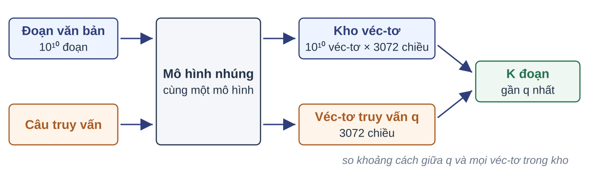
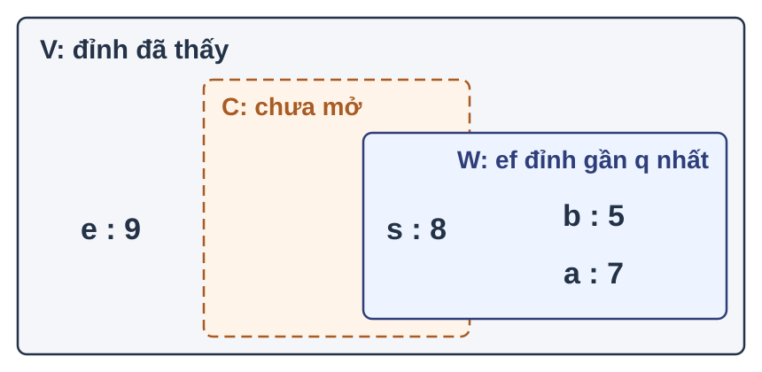
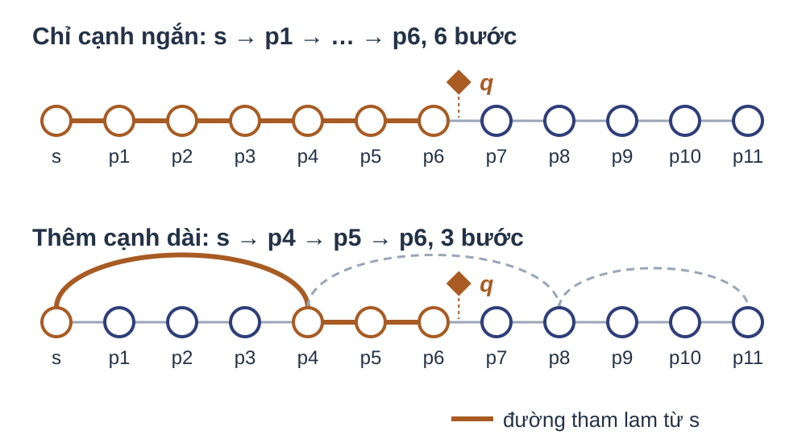
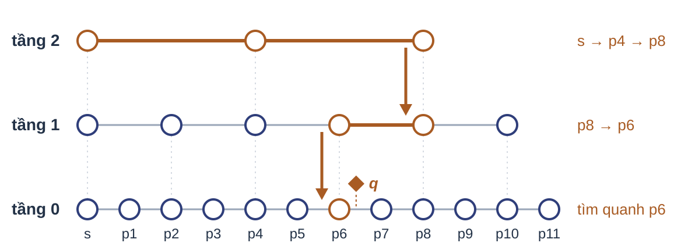
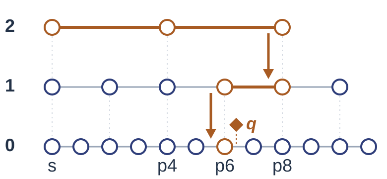
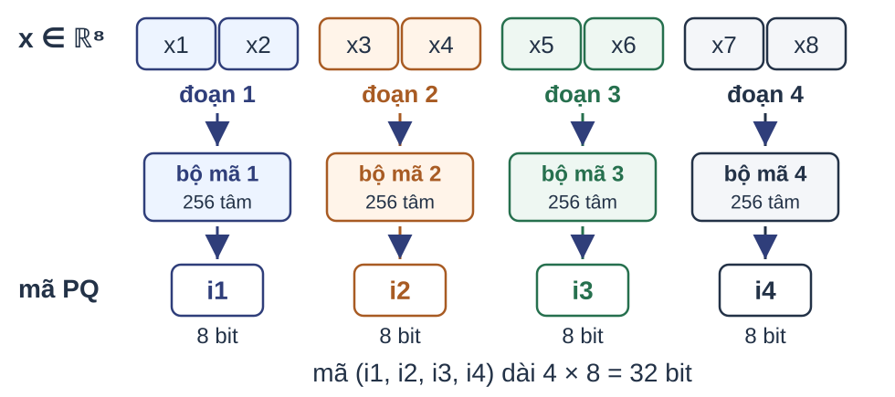
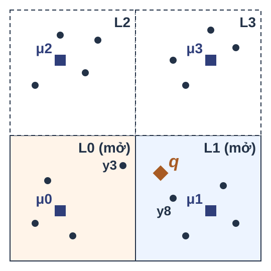
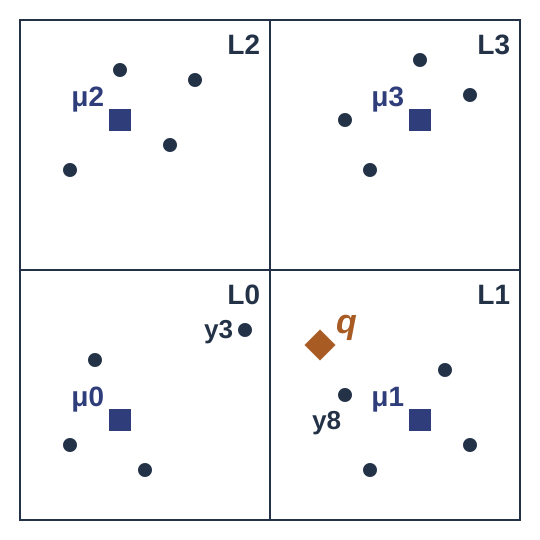
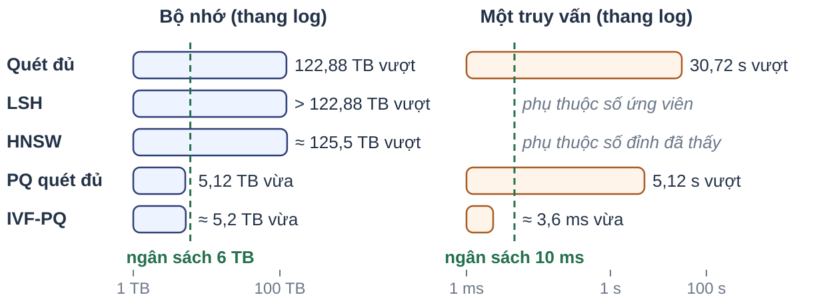
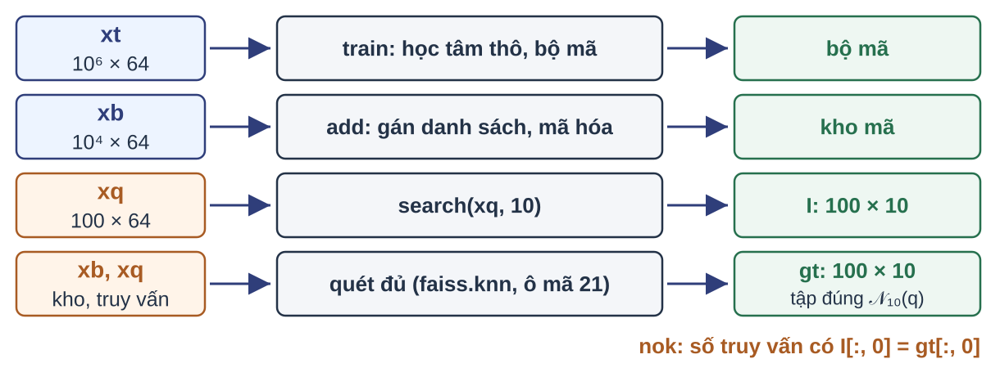

Chỉ mục hàng xóm gần đúng Đồ thị nhiều tầng bớt phép đo, mã ngắn giảm chi phí đo; đổi lại, có thể sót hàng xóm.
Giải thuật nền tảng của Khoa học dữ liệu
Học kỳ 1 · Năm học 2026–2027
Trường Đại học Công nghệ · Đại học Quốc gia Hà Nội
Bài 06 tìm các cặp gần nhau bên trong một tập bằng băm nhạy cảm theo tính cục bộ (locality-sensitive hashing, LSH). Bài toán ở đây là truy vấn: cho một véc-tơ mới $q$, tìm $K$ véc-tơ gần $q$ nhất trong một kho rất lớn mà không đo khoảng cách từ $q$ tới mọi véc-tơ của kho. Đồ thị thế giới nhỏ phân tầng (Hierarchical Navigable Small World, HNSW) giảm số véc-tơ phải đo; lượng tử hóa tích (product quantization, PQ) thay mỗi véc-tơ bằng một mã ngắn; tệp đảo kết hợp lượng tử hóa tích (IVF-PQ) chỉ mở một phần kho rồi chấm bằng mã ngắn. Cả ba cấu trúc trả một tập gần đúng, nên kết quả có thể thiếu hàng xóm thật.
Nguồn: Stanford BIODS 271, bài 12, tr.16–18; Princeton COS 597A, bài giảng 8–9; Malkov và Yashunin (HNSW); Jégou, Douze và Schmid (PQ).
Tiên quyết và quy ước Nhắc lại: Bài 01 đặt $\mathcal N_k(q)$, gồm $k$ chỉ số đầu theo cặp $(d(q,y_i),i)$, và $\operatorname{recall@}k(q)=|\widehat{\mathcal N}_k(q)\cap\mathcal N_k(q)|/k$.
Nhắc lại: kiểm chính xác trên tập ứng viên $A$ trả đủ kết quả $R$ khi và chỉ khi $R\subseteq A$ (Bài 01).
Nhắc lại: LSH chỉ đo véc-tơ cùng thùng với $q$; điểm có $d\le d_1$ thành ứng viên với xác suất ít nhất $1-(1-p_1^r)^b$ (Bài 06).
Nhắc lại: $d$ Euclid thỏa bất đẳng thức tam giác $d(x,w)\le d(x,y)+d(y,w)$.
Năm kết quả được dùng lại: bài toán $k$ hàng xóm chính xác (Định nghĩa 01.2) và độ thu hồi tại $k$ (Định nghĩa 01.17) của Bài 01; xác minh ứng viên (Mệnh đề 01.16(c)); họ nhạy cảm và phép ghép $r$ hàm trong một bảng, ít nhất một trên $b$ bảng (Mệnh đề 06.26); độ đo khoảng cách (Định nghĩa 06.14). Với LSH làm bộ lọc cho truy vấn, $q$ được băm bằng cùng các hàm và chỉ véc-tơ cùng thùng được đo, nên một điểm có $d\le d_1$ bị bỏ sót với xác suất nhiều nhất $(1-p_1^r)^b$.
Nguồn: MMDS ấn bản 3, Chương 3 (LSH); ghi chú Bài 01 và Bài 06.
Tiên quyết và quy ước, ký hiệu Nhắc lại: với $X$ nguyên không âm, $\mathbb E[X]=\sum_{t\ge1}\Pr[X\ge t]$; chặn hợp $\Pr[\bigcup_iA_i]\le\sum_i\Pr[A_i]$; $\sum_{s\ge1}x^s=x/(1-x)$ khi $0\le x<1$.
Ký hiệu: kho $Y=\{y_1,\ldots,y_N\}\subset\mathbb R^D$; truy vấn $q\in\mathbb R^D$; số hàng xóm $K$, $1\le K\le N$; $d$ là khoảng cách Euclid.
Quy ước: $y_i$ và đoạn $j$ đếm từ 1; tâm, mã và danh sách đảo đếm từ 0.
Quy ước: 1 TB là $10^{12}$ byte; tọa độ viết $(1{,}7;\ 0{,}4)$; dấu $\mid$ ngăn hai đoạn của một véc-tơ.
Ba công cụ xác suất của học phần Xác suất thống kê: kỳ vọng của biến nguyên không âm viết bằng tổng xác suất đuôi, chặn hợp không cần độc lập, và tổng chuỗi hình học. Đồ thị có hướng, hàng đợi ưu tiên, đống nhị phân và k-means lấy từ các học phần trước.
Mỗi chữ giữ một nghĩa trong cả bài: $C$ là hàng đợi đỉnh chờ mở, còn $\mathcal C$ là bộ mã; $L$ là tầng của điểm vào, còn $L_i$ là danh sách đảo; $b$, $r$ giữ nghĩa số bảng và số hàm mỗi bảng của LSH. So với Bài 06, các chữ $N$, $K$, $m$, $\rho$, $Q$, $C$, $\mathcal C$, $L$, $s$, $k$ đổi nghĩa. Dấu phẩy là dấu thập phân, nên tọa độ cách nhau bằng dấu chấm phẩy.
Mục tiêu học tập Đặc tả tìm gần đúng, tính độ thu hồi, tách hai nguồn thiếu điểm. Chạy tay tham lam, SEARCH-LAYER; chứng minh bất biến. Chạy truy vấn, chèn HNSW; tính phân phối tầng, bộ nhớ; nêu giả thiết cận $O(\log N)$. Mã hóa bằng VQ, PQ; tính ADC bằng bảng tra, chặn sai số. Chạy truy vấn IVF-PQ, tính chi phí; nêu hậu quả khi danh sách lệch. So bốn cấu trúc; chọn chỉ mục theo ngân sách, độ thu hồi. Mục tiêu 1 đòi viết đầu vào, đầu ra của tìm đúng và tìm gần đúng, tính độ thu hồi từ hai tập, và phân biệt điểm thiếu vì không được đo với điểm thiếu vì đo xấp xỉ. Mục tiêu 2 đòi lập vết tham lam và tìm kiếm chùm, rồi chứng minh bất biến bằng khởi tạo, duy trì, kết thúc. Mục tiêu 3 đòi chạy tay ba tầng, tính số điểm mỗi tầng, byte mỗi điểm. Mục tiêu 4 đòi mã hóa một véc-tơ, cộng các ô bảng tra và kiểm cận $|d-\widetilde d|\le\|y-\widehat y\|$. Mục tiêu 5 đòi đếm thao tác theo $k_c$, $\mathit{nprobe}$ và so dự đoán với số đo khi danh sách không cân bằng. Mục tiêu 6 đòi đặt bốn cấu trúc trên cùng kho và chọn theo ngân sách.
Nội dung Bài toán hàng xóm gần đúng Tìm kiếm trên đồ thị lân cận Đồ thị thế giới nhỏ phân tầng (HNSW) Lượng tử hóa tích (PQ) Tệp đảo kết hợp PQ (IVF-PQ) Tổng kết và tự kiểm tra Bài tập thực hành Đọc trước: Malkov và Yashunin, mục 3–4; Jégou, Douze và Schmid, mục II–IV; Princeton COS 597A, bài giảng 8–9.
Bài toán hàng xóm gần đúng xuất phát từ kho mười tỷ véc-tơ mà quét đầy đủ không đáp ứng được; chất lượng đo bằng độ thu hồi, chi phí truy vấn tách thành số véc-tơ được đo nhân chi phí một phép đo. Tìm kiếm chùm trên đồ thị giảm thừa số thứ nhất và đúng trên các đỉnh đã thấy. Đồ thị nhiều tầng thêm cạnh dài để rút ngắn đường đi nhưng vẫn giữ véc-tơ gốc. Lượng tử hóa tích giảm thừa số thứ hai và bộ nhớ bằng mã ngắn, nhưng quét đủ vẫn chấm mọi mã. IVF-PQ chỉ chấm mã trong một phần kho. Tổng kết đặt bốn cấu trúc trên kho mở đầu; bài tập thực hành đo lại đánh đổi của PQ và IVF-PQ trên sổ Faiss.
Vấn đề trung tâm Nhu cầu: tìm $K$ véc-tơ gần $q$ trong $10^{10}$ véc-tơ; giả sử 6 TB, 10 ms.
Tìm kiếm chùm: đúng trên các đỉnh đã thấy. Đồ thị nhiều tầng: ít bước, vẫn giữ véc-tơ gốc. PQ: mã ngắn; vẫn chấm mọi mã. IVF-PQ: chỉ chấm mã trong vài danh sách. Chọn IVF-PQ khi danh sách cân bằng và đủ độ thu hồi. Quy mô lấy từ cấu hình của nguồn: $N=10^{10}$ véc-tơ, $D=3072$ chiều, số thực 4 byte. Giả sử một máy có 6 TB bộ nhớ trong, mỗi truy vấn được 10 ms và máy xử lý $10^{12}$ thao tác mỗi giây, với một thao tác là một lượt xử lý một tọa độ hoặc một lần tra bảng. Năm dòng là câu trả lời có điều kiện của năm mạch: tìm kiếm chùm chỉ đo các đỉnh trên đường đi; tầng thưa rút ngắn đường đi nhưng vẫn lưu véc-tơ gốc; PQ giảm chi phí mỗi phép đo; IVF-PQ giảm cả hai thừa số; chọn IVF-PQ khi danh sách cân bằng và $\mathit{nprobe}$ đạt ngưỡng độ thu hồi đo được.
Nguồn: Stanford BIODS 271, bài 12, tr.17.
Ví dụ: truy hồi ngữ nghĩa trên mười tỷ véc-tơ $N=10^{10}$ đoạn văn bản, $D=3072$, số thực 4 byte. Tính dung lượng kho và số lượt tọa độ khi quét.

Lưu kho: $10^{10}\cdot3072\cdot4$ byte $=122{,}88$ TB
Quét một truy vấn: $10^{10}\cdot3072\approx3{,}07\cdot10^{13}$ lượt tọa độ
Câu hỏi: Với $10^{12}$ và $10^{13}$ lượt tọa độ mỗi giây, quét toàn kho gấp bao nhiêu lần 10 ms?
Trong truy hồi ngữ nghĩa (semantic retrieval), một mô hình nhúng (embedding model) biến mỗi đoạn văn bản thành một véc-tơ số thực sao cho hai đoạn có nội dung gần nhau cho hai véc-tơ gần nhau theo một độ đo như tích vô hướng, cosin hoặc khoảng cách Euclid. Câu truy vấn đi qua cùng mô hình, nên tìm đoạn liên quan là tìm véc-tơ gần $q$. Kho đi qua mô hình một lần khi xây chỉ mục; truy vấn đi qua mô hình mỗi lần hỏi.
Lời giải: $3{,}072\cdot10^{13}/10^{12}=30{,}72$ giây cho một truy vấn, gấp $3072$ lần ngân sách 10 ms. Với $10^{13}$ lượt mỗi giây: $3{,}072$ giây, gấp $307{,}2$ lần (Bài tập 07.1(a)). Kho gốc $122{,}88$ TB vượt 6 TB hơn 20 lần.
Nguồn: Stanford BIODS 271, bài 12, tr.16 (quy trình truy hồi dày đặc) và tr.17 (cấu hình $N$, $D$, độ chính xác 32 bit).
Bài toán $K$ hàng xóm gần nhất Nhu cầu: một tập đúng để so mọi chỉ mục; quét đủ tạo nó bằng $3{,}07\cdot10^{13}$ lượt tọa độ.
Đầu vào: kho $Y$, $|Y|=N$; truy vấn $q$; khoảng cách $d$; số nguyên $1\le K\le N$.
Đầu ra: $\mathcal N_K(q)$, gồm $K$ chỉ số đầu khi sắp theo cặp $(d(q,y_i),i)$ tăng dần.
Ví dụ. $d(q,y_i)=2{,}5;\ 1{,}2;\ 3{,}0;\ 0{,}8;\ 1{,}7$ với $i=1,\ldots,5$; $K=3$: $\mathcal N_3(q)=\{4,2,5\}$.
Mệnh đề. Quét đủ với đống $K$ phần tử trả đúng $\mathcal N_K(q)$ sau $\Theta(ND)+O(N\log K)$ phép toán (Mệnh đề 07.3).
Bài toán tìm đúng $K$ hàng xóm (exact $K$-nearest-neighbor search) là Định nghĩa 01.2 với $n\to N$, $k\to K$, kể cả phá hòa theo chỉ số: hai điểm cách $q$ bằng nhau thì chỉ số nhỏ đứng trước, nên $\mathcal N_K(q)$ xác định duy nhất. Thứ tự của ví dụ: $y_4$ ($0{,}8$), $y_2$ ($1{,}2$), $y_5$ ($1{,}7$), $y_1$ ($2{,}5$), $y_3$ ($3{,}0$).
Quét đủ (Thuật toán 07.2) đọc $y_1,\ldots,y_N$ và giữ $K$ cặp $(\delta,i)$ nhỏ nhất trong một đống cực đại; điểm mới thay gốc khi nhỏ hơn gốc theo thứ tự từ điển. Trên ví dụ: giữ $y_1,y_2,y_3$; $y_4$ thay $y_3$; $y_5$ thay $y_1$; còn $\{y_2,y_4,y_5\}$. Chi phí gồm $N$ khoảng cách, mỗi khoảng cách $\Theta(D)$, cộng $O(N\log K)$ cho đống.
Nguồn: Malkov và Yashunin, tr.1 (bài toán K-NNS); Jégou, Douze và Schmid, tr.1; Ví dụ 07.1, Thuật toán 07.2.
Tìm hàng xóm gần đúng Định nghĩa. Tìm gần đúng $K$ hàng xóm (approximate nearest neighbor search, ANN): cùng đầu vào, trả tối đa $K$ chỉ số $\widehat{\mathcal N}_K(q)$.
Chỉ mục hàng xóm (vector index) dựng sẵn trên $Y$, chọn véc-tơ được đo và khoảng cách để đo.
Ví dụ. Năm điểm trên, $K=3$: chỉ mục trả $\widehat{\mathcal N}_3(q)=\{4,5,1\}$.
Thiếu $y_2$ vì $y_2$ không được đo, hoặc $\widetilde d$ xấp xỉ xếp $y_2$ sau $y_1$.
Trong ví dụ, $y_2$ ($1{,}2$) bị thay bằng $y_1$ ($2{,}5$). Cách thứ nhất: chỉ mục không đo $y_2$ và trả ba điểm tốt nhất của $\{y_1,y_3,y_4,y_5\}$, đúng là $\{y_4,y_5,y_1\}$. Cách thứ hai: chỉ mục đo cả năm điểm nhưng xếp hạng bằng $\widetilde d$ với $\widetilde d(q,y_2)=2{,}6>\widetilde d(q,y_1)$. Chữ “tối đa” cho phép trả ít hơn $K$ chỉ số khi phần kho được đo có ít hơn $K$ véc-tơ.
Chỉ mục băm (Định nghĩa 01.8) tra bản ghi có khóa bằng một giá trị cho trước; chỉ mục hàng xóm tra véc-tơ gần một véc-tơ cho trước và chấp nhận trả thiếu. Không chỉ mục nào trong bài bảo đảm $\widehat{\mathcal N}_K(q)=\mathcal N_K(q)$ cho mọi truy vấn.
Nguồn: Malkov và Yashunin, tr.1 (bài toán K-ANNS); Jégou, Douze và Schmid, tr.1; Định nghĩa 07.1, Ví dụ 07.2.
Độ thu hồi tại $K$ Khi chỉ mục trả đủ $K$ chỉ số, định nghĩa trùng Định nghĩa 01.17. Độ thu hồi bằng 1 khi và chỉ khi $\widehat{\mathcal N}_K(q)=\mathcal N_K(q)$: giao có $K$ phần tử thì chứa cả $\mathcal N_K(q)$, mà $\widehat{\mathcal N}_K(q)$ có tối đa $K$ phần tử. Hai cách thiếu $y_2$ cho cùng con số $2/3$, nên độ thu hồi không cho biết lỗi đến từ đâu.
Lời giải: giao là $\{\mathrm a,\mathrm c\}$, nên $\operatorname{recall@}5=2/5$ (Bài tập 07.2(a)).
Bài báo PQ (§V-A, tr.8) đo recall@R, tỷ lệ truy vấn có hàng xóm gần nhất nằm trong $R$ vị trí đầu; khi $K=R=1$ hai đại lượng trùng nhau, khi $K>1$ thì khác: trên ví dụ, recall@3 theo nghĩa của bài báo bằng 1.
Nguồn: Malkov và Yashunin, tr.1; Jégou, Douze và Schmid, mục V-A, tr.8; Định nghĩa 07.4, Ví dụ 07.2.
Độ thu hồi trung bình Định nghĩa. Độ thu hồi trung bình (mean recall) trên tập truy vấn $Q$:
$\overline{\operatorname{recall@}K}=\dfrac{1}{|Q|}\displaystyle\sum_{q\in Q}\operatorname{recall@}K(q)$
Ví dụ. $K=10$, $|Q|=10$, mỗi truy vấn tìm lại 9 hàng xóm thật: trung bình $0{,}9$.
Lưu ý: trung bình $0{,}9$ không cho biết tỷ lệ truy vấn đúng hoàn toàn.
Câu hỏi: Chín truy vấn đạt 1, một đạt 0. Tính trung bình và tỷ lệ truy vấn đúng hoàn toàn.
Lời giải: trung bình $(9\cdot1+1\cdot0)/10=0{,}9$, bằng ví dụ; tỷ lệ truy vấn nhận đủ tập đúng là $9/10$, còn ở ví dụ là $0$ (Bài tập 07.2(b)). Ở ví dụ, mỗi truy vấn thiếu một hàng xóm; ở câu hỏi, chín truy vấn đúng hoàn toàn và một truy vấn không tìm được hàng xóm thật nào. Ứng dụng cần mọi truy vấn đạt một mức tối thiểu phải đo phân phối của $\operatorname{recall@}K(q)$, không chỉ trung bình.
Bài tập thực hành dùng nok, số truy vấn trong 100 truy vấn có kết quả đầu tiên đúng; nok/100 là $\overline{\operatorname{recall@}1}$.
Nguồn: Malkov và Yashunin, tr.1; sổ thực hành Princeton COS 597A, bài giảng 8, ô mã 155; Định nghĩa 07.4.
Bốn trục đánh giá chỉ mục Câu hỏi: Cùng $Q$, $K=10$, cùng phần cứng: A đạt $\overline{\operatorname{recall@}10}=0{,}9$ trong 5 ms; B đạt $0{,}7$ trong 2 ms. Nêu điều kiện để chọn B.
Trục Đại lượng đo Chất lượng $\overline{\operatorname{recall@}K}$ Truy vấn độ trễ, số khoảng cách Xây dựng thời gian, dữ liệu huấn luyện Bộ nhớ byte mỗi véc-tơ, kể cả chỉ mục
Một chỉ mục gần đúng đổi chất lượng lấy thời gian hoặc bộ nhớ, nên độ thu hồi một mình không xếp hạng được hai chỉ mục. Hai chỉ mục chỉ so được trên một trục khi các trục còn lại được giữ cố định hoặc nêu kèm: tập truy vấn, $K$ và tập đúng cho chất lượng; phần cứng, số luồng và kích thước lô cho truy vấn; tham số chỉ mục cho xây dựng; có lưu véc-tơ gốc hay không cho bộ nhớ.
Lời giải (Bài tập 07.3): với ngưỡng độ thu hồi $\tau$ và ngân sách độ trễ $T_{\max}$, A dùng được khi $\tau\le0{,}9$ và $T_{\max}\ge5$; B dùng được khi $\tau\le0{,}7$ và $T_{\max}\ge2$. Chỉ chọn được B khi $\tau\le0{,}7$ và $2\le T_{\max}<5$; khi $\tau\le0{,}7$ và $T_{\max}\ge5$, cả hai dùng được và chọn theo trục còn lại, như bộ nhớ.
Nguồn: Princeton COS 597A, bài giảng 8, tr.2–5; bài giảng 9, tr.2; Nhận xét 07.6.
Hai thừa số chi phí và hai nguồn thiếu điểm Mệnh đề. Chỉ mục đo tập $S$, $n_c=|S|$, bằng $\widetilde d$: chi phí là chọn $S$, cộng $n_c$ lần tính $\widetilde d$, cộng $O(n_c\log K)$.
Hàng xóm ngoài $S$ luôn thiếu; nếu $\widetilde d=d$, mọi hàng xóm trong $S$ đều được trả (Mệnh đề 07.7).
Quét đủ: $S=Y$, $n_c=N=10^{10}$, mỗi phép đo $D=3072$ lượt tọa độ.
Cấu trúc Thừa số giảm Lưu véc-tơ gốc Thiếu điểm vì LSH $n_c$ có không được đo Đồ thị lân cận $n_c$ có không được đo PQ chi phí một phép đo không đo xấp xỉ IVF-PQ cả hai không cả hai
Mọi chỉ mục trong bài chọn một tập $S\subseteq Y$, đo mỗi véc-tơ của $S$ bằng một khoảng cách $\widetilde d$ (có thể khác $d$), rồi trả $\min(K,n_c)$ phần tử đầu theo $(\widetilde d,\text{chỉ số})$. Ví dụ năm điểm có hai cách: $S=Y\setminus\{y_2\}$ với $\widetilde d=d$, hoặc $S=Y$ với $\widetilde d\ne d$. Khi $\widetilde d=d$, $\operatorname{recall@}K(q)=1$ khi và chỉ khi mọi hàng xóm thật thuộc $S$; đây là dạng hàng xóm của Mệnh đề 01.16(c).
Với LSH, một véc-tơ có $d\le d_1$ nằm ngoài $S$ với xác suất nhiều nhất $(1-p_1^r)^b$. Khi kho còn véc-tơ gốc, nguồn thiếu thứ hai giảm bằng xếp hạng lại (re-ranking) danh sách ngắn bằng $d$; nguồn thứ nhất chỉ giảm khi $S$ lớn hơn.
Nguồn: Princeton COS 597A, bài giảng 9, tr.4–5, tr.7; bài giảng 8, tr.2; MMDS ấn bản 3, Chương 3.
2. Tìm kiếm trên đồ thị lân cậnMuốn đo ít véc-tơ mà vẫn tới điểm gần $q$, phải đi trên đồ thị lân cận và giữ nhiều hướng.
Đồ thị lân cận · Tìm kiếm tham lam · Tìm kiếm chùm · SEARCH‑LAYER · Bất biến
Chi phí truy vấn bằng số véc-tơ được đo nhân chi phí một phép đo, và quét đủ đo cả $N=10^{10}$ véc-tơ. Trên đồ thị bảy đỉnh, tìm kiếm tham lam kẹt ở cực tiểu cục bộ $\mathrm b$, còn tìm kiếm chùm với $ef=3$ giữ nhánh $\mathrm s$ và tới được $\mathrm z$. SEARCH-LAYER được chứng minh bằng bất biến: kết quả đúng trên tập đỉnh đã thấy, còn vùng chưa thấy có thể chứa đỉnh gần $q$ hơn.
Đồ thị lân cận Nhu cầu: quét đủ có $n_c=N=10^{10}$; cần $n_c\ll N$ mà vẫn tới điểm gần $q$.
Đồ thị lân cận (proximity graph) là đồ thị có hướng có đỉnh là véc-tơ, cạnh nối mỗi đỉnh với vài đỉnh gần nó.
Chỉ mục lưu véc-tơ, danh sách lân cận $\mathcal L(y)$ của mỗi đỉnh và một điểm vào (entry point) $s$.
Tìm kiếm đi từ điểm vào, đo $d(q,\cdot)$ tại các lân cận rồi sang đỉnh gần $q$ hơn; chỉ các đỉnh trên đường đi và lân cận của chúng được đo. Chỉ mục đồ thị đo bằng đúng $d$, nên theo Mệnh đề 07.7, hàng xóm thật chỉ thiếu khi không được đo. Trong hình, mỗi đoạn thẳng là hai cạnh có hướng ngược nhau; vị trí các đỉnh giữ thứ tự khoảng cách tới $q$. Với mã định danh $s_{id}$ byte và bậc ra trung bình $g$, chỉ mục chiếm $N\cdot(4D+s_{id}\,g)$ byte; $s_{id}=4$ khi $N\le2^{32}$, $s_{id}=8$ với kho $10^{10}$. Đồ thị lân cận khác đồ thị $k$ hàng xóm: $\mathcal L(y)$ không bắt buộc là đúng các điểm gần $y$ nhất.
Nguồn: Princeton COS 597A, bài giảng 9, tr.7 (cấu trúc dữ liệu), tr.8 (tìm kiếm tham lam); Malkov và Yashunin, tr.2; Định nghĩa 07.8.
Tìm kiếm tham lam Tìm kiếm tham lam (greedy search): đo mọi lân cận của đỉnh hiện tại; sang lân cận gần $q$ nhất nếu nó gần hơn, ngược lại dừng.
Ký hiệu: $\mathrm e{:}9$ nghĩa là $d(\mathrm e,q)=9$, chỉ được tính khi gặp $\mathrm e$.
Đỉnh Lân cận Quyết định $\mathrm e{:}9$ $\mathrm a{:}7,\ \mathrm s{:}8$ sang $\mathrm a$ $\mathrm a{:}7$ $\mathrm e{:}9,\ \mathrm b{:}5$ sang $\mathrm b$ $\mathrm b{:}5$ $\mathrm a{:}7$ dừng
Kết luận: tham lam dừng ở $\mathrm b{:}5$, trong khi $\mathrm z{:}1$ gần $q$ hơn.
Thuật toán không biết trước khoảng cách của mọi đỉnh; khoảng cách của một đỉnh được tính khi đỉnh đó xuất hiện trong danh sách lân cận của đỉnh đang đứng, và được ghi nhớ, nên mỗi đỉnh được đo nhiều nhất một lần. Vết dùng 4 phép đo: $\mathrm e$; $\mathrm a$, $\mathrm s$; $\mathrm b$. Tại $\mathrm b$, lân cận duy nhất $\mathrm a{:}7$ xa hơn $5$ nên thuật toán dừng; $\mathrm t$, $\mathrm u$, $\mathrm z$ không bao giờ được đo. Tham lam bỏ nhánh $\mathrm e\to\mathrm s$ ngay bước đầu vì $\mathrm s{:}8$ xa hơn $\mathrm a{:}7$.
Nguồn: Princeton COS 597A, bài giảng 9, tr.8 (tham lam, cực tiểu cục bộ, không quay lui), tr.11–13; Thuật toán 07.9, Ví dụ 07.3.
Cực tiểu cục bộ Định nghĩa. Đỉnh $v$ là cực tiểu cục bộ (local minimum) khi không lân cận nào của $v$ gần $q$ hơn $v$.
Chứng minh: mỗi bước sang một đỉnh đứng trước đỉnh hiện tại theo thứ tự $(d(\cdot,q),\text{chỉ số})$, là thứ tự toàn phần chặt trên $N$ đỉnh, nên đường đi không lặp đỉnh và có nhiều nhất $N-1$ bước. Thủ tục dừng ở $v$ khi lân cận nhỏ nhất của $v$ không đứng trước $v$, tức không lân cận nào gần $q$ hơn $v$. Mệnh đề không bảo đảm đỉnh trả về gần $q$ nhất. Bỏ phá hòa thì hai đỉnh cùng khoảng cách nối nhau làm tham lam đi qua lại không dừng.
Đỉnh gần $q$ nhất luôn là một cực tiểu cục bộ, điều ngược lại sai. Định nghĩa phụ thuộc cạnh: thêm cạnh $\mathrm b$–$\mathrm t$ làm $\mathrm b$ hết là cực tiểu cục bộ. Muốn tới $\mathrm z$, thuật toán phải còn giữ $\mathrm s$ sau khi đã sang $\mathrm a$.
Nguồn: Princeton COS 597A, bài giảng 9, tr.8; Định nghĩa 07.10.
Tìm kiếm chùm Muốn tới $\mathrm z{:}1$ khi tham lam dừng ở $\mathrm b{:}5$, phải giữ nhánh $\mathrm s$ chưa đi.
Quan hệ $\prec$ phá hòa: hai đỉnh cách $q$ bằng nhau thì đỉnh có chỉ số nhỏ đứng trước. Ban đầu $C$ và $W$ chỉ chứa điểm vào. “Thấy” một đỉnh là tính khoảng cách của nó; “mở” là đo các lân cận chưa thấy của nó. Một lân cận chưa thấy vào $C$ và $W$ khi $|W|<ef$ hoặc khi nó gần $q$ hơn phần tử xa nhất $f$ của $W$; nếu $W$ thừa thì bỏ phần tử xa nhất. Đỉnh bị đẩy khỏi $W$ vẫn chờ trong $C$. Thuật toán dừng khi đỉnh sắp mở xa $q$ hơn $f$, hoặc khi $C$ rỗng. Với $ef=1$, $W$ chỉ có một đỉnh nên mỗi bước chỉ đi sang lân cận tốt hơn đỉnh hiện tại, đúng là tìm kiếm tham lam (Hệ quả 07.14).
Nguồn: Princeton COS 597A, bài giảng 9, tr.9; Malkov và Yashunin, Thuật toán 2, tr.4.
Ví dụ: tìm kiếm chùm trên đồ thị bảy đỉnh Điểm vào $\mathrm e$, $ef=3$. Tính $C$ và $W$ sau mỗi lần mở.
Mở $c$ khi $c\preceq f$, với $f$ là đỉnh xa $q$ nhất của $W$; ngược lại dừng.
Mở $c$ $d(c,q)$, $d(f,q)$ $C$ sau bước $W$ sau bước $\mathrm e$ $9\le9$ $\mathrm a{:}7,\ \mathrm s{:}8$ $\mathrm a{:}7,\ \mathrm s{:}8,\ \mathrm e{:}9$ $\mathrm a$ $7\le9$ $\mathrm b{:}5,\ \mathrm s{:}8$ $\mathrm b{:}5,\ \mathrm a{:}7,\ \mathrm s{:}8$ $\mathrm b$ $5\le8$ $\mathrm s{:}8$ $\mathrm b{:}5,\ \mathrm a{:}7,\ \mathrm s{:}8$ $\mathrm s$ $8\le8$ $\mathrm t{:}4$ $\mathrm t{:}4,\ \mathrm b{:}5,\ \mathrm a{:}7$
Nhận xét. Mở $\mathrm a$ đẩy $\mathrm e{:}9$ khỏi $W$ nhưng giữ $\mathrm s{:}8$; sau khi mở $\mathrm b$, nhánh $\mathrm s$ còn trong $C$.
Cột thứ hai so khoảng cách của đỉnh vừa lấy ra $c$ với ngưỡng $f$, lấy trước khi mở $c$. Khi mở $\mathrm a$, $W$ đã đủ ba phần tử; $\mathrm b{:}5$ gần hơn ngưỡng $\mathrm e{:}9$ nên vào $W$ và $\mathrm e$ bị đẩy ra; $\mathrm s{:}8$ vẫn thuộc ba đỉnh gần nhất đã thấy nên ở lại. Khi mở $\mathrm b$, lân cận duy nhất $\mathrm a$ đã thấy, nhưng $\mathrm s{:}8$ còn trong $C$; đó là nhánh dự phòng mà tham lam đã bỏ. Ở dòng thứ tư, $c=\mathrm s$ và lúc đó $f$ cũng là $\mathrm s$, nên không dừng; mở $\mathrm s$ đưa $\mathrm t{:}4$ vào và đẩy $\mathrm s$ khỏi $W$, ngưỡng mới là $\mathrm a{:}7$.
Nguồn: Princeton COS 597A, bài giảng 9, tr.9; Malkov và Yashunin, Thuật toán 2, tr.4; Ví dụ 07.4.
Ví dụ: tìm kiếm chùm trên đồ thị bảy đỉnh, bước cuối Từ $W=\{\mathrm t{:}4,\mathrm b{:}5,\mathrm a{:}7\}$, $C=\{\mathrm t{:}4\}$, $ef=3$: tính tiếp $C$, $W$ đến khi dừng.
Mở $c$ $d(c,q)$, $d(f,q)$ $C$ sau bước $W$ sau bước $\mathrm t$ $4\le7$ $\mathrm u{:}2$ $\mathrm u{:}2,\ \mathrm t{:}4,\ \mathrm b{:}5$ $\mathrm u$ $2\le5$ $\mathrm z{:}1$ $\mathrm z{:}1,\ \mathrm u{:}2,\ \mathrm t{:}4$ $\mathrm z$ $1\le4$ rỗng $\mathrm z{:}1,\ \mathrm u{:}2,\ \mathrm t{:}4$
Kết luận: $C$ rỗng nên dừng; $W=\{\mathrm z,\mathrm u,\mathrm t\}$, ba đỉnh gần $q$ nhất, sau 7 phép đo.
Câu hỏi: Chạy lại với $ef=2$; thuật toán dừng ở bước nào, trả $W$ nào?
Gợi ý: dừng khi $f\prec c$ hoặc $C$ rỗng.
Lời giải $ef=2$ (Ví dụ 07.5): mở $\mathrm e$: $\mathrm a{:}7$ vào vì $|W|=1<2$, $\mathrm s{:}8$ vào vì $8<9$, $\mathrm e$ bị bỏ; $W=\{\mathrm a,\mathrm s\}$. Mở $\mathrm a$: $\mathrm b{:}5$ vào, $\mathrm s$ bị bỏ khỏi $W$ nhưng còn trong $C$; $W=\{\mathrm b,\mathrm a\}$, $C=\{\mathrm b,\mathrm s\}$. Mở $\mathrm b$: không lân cận mới. Lần lấy thứ tư cho $\mathrm s{:}8$, xa hơn ngưỡng $\mathrm a{:}7$, nên dừng mà không mở $\mathrm s$; trả $W=\{\mathrm b,\mathrm a\}$ với $V=\{\mathrm e,\mathrm a,\mathrm s,\mathrm b\}$. Ngay sau khi mở $\mathrm a$, $\mathrm s$ thuộc $C$ mà không thuộc $W$, nên $C\subseteq W$ không phải lúc nào cũng đúng. Bề rộng $ef$ đổi vùng được khám phá: $ef=3$ đo 7 đỉnh, $ef=2$ đo 4 đỉnh.
Nguồn: Malkov và Yashunin, Thuật toán 2, tr.4.
Thuật toán: SEARCH-LAYER 
Sau khi mở $\mathrm b$, $ef=3$: $\mathrm e$ đã mở, bị đẩy khỏi $W$; $\mathrm s$ chưa mở, thuộc $C$ và $W$.
Đầu vào: truy vấn $q$; bề rộng $ef\ge1$; tập điểm vào $ep$ với $1\le|ep|\le ef$; tầng $\ell_c$ (một đồ thị thì $\ell_c=0$).
Đầu ra: $W$, tối đa $ef$ đỉnh nhỏ nhất theo $\prec$ trong các đỉnh đã thấy.
Ký hiệu: $V$ là tập đỉnh đã thấy, tức đã tính $d(\cdot,q)$; $C,W\subseteq V$.
Tìm kiếm chùm trên đồ thị ví dụ chính là SEARCH-LAYER với $ep=\{\mathrm e\}$, $ef=3$. Tham số $\ell_c$ chỉ tầng của đồ thị nhiều tầng; mọi đỉnh trong $ep$ phải thuộc tầng $\ell_c$. Điều kiện $1\le|ep|\le ef$ làm $W\leftarrow ep$ là khởi tạo hợp lệ: $W$ không rỗng nên luôn có phần tử xa nhất, và không vượt $ef$. Trong cài đặt, $V$ là tập băm, $C$ là đống cực tiểu và $W$ là đống cực đại theo $\prec$.
Đầu ra chỉ nói về các đỉnh đã thấy, không nói về toàn tầng: vùng chưa được phát hiện có thể chứa đỉnh gần $q$ hơn. Trong hình, $\mathrm s$ đã thấy từ lần mở $\mathrm e$ nhưng chưa mở, nên $\mathrm s$ còn có thể dẫn tới $\mathrm z$.
Nguồn: Malkov và Yashunin, Thuật toán 2, tr.4; Thuật toán 07.12.
Thuật toán: SEARCH-LAYER
V ← ep; C ← ep; W ← ep // đã thấy, chờ mở, kết quả
while C khác rỗng:
c ← lấy ra đỉnh gần q nhất trong C
f ← đỉnh xa q nhất trong W // ngưỡng
if f ≺ c: break // ứng viên tốt nhất xa hơn ngưỡng
for y in lân cận của c ở tầng ℓc: // mở c
if y ∉ V: // mỗi đỉnh chỉ đo một lần
thêm y vào V
f ← đỉnh xa q nhất trong W // W có thể vừa đổi
if |W| < ef or y ≺ f:
thêm y vào C và W
if |W| > ef: bỏ đỉnh xa q nhất khỏi W
return W
Ví dụ. $ef=3$, mở $\mathrm s$ khi $W=\{\mathrm b,\mathrm a,\mathrm s\}$: $f=\mathrm s{:}8$; thêm $\mathrm t{:}4$, bỏ $\mathrm s$; ngưỡng mới $f=\mathrm a{:}7$.
Thao tác quyết định là so đỉnh mới với ngưỡng $f$, phần tử xa nhất của $W$: khi $|W|<ef$, đỉnh mới luôn được nhận; khi $W$ đã đủ, chỉ đỉnh đứng trước $f$ theo $\prec$ mới được nhận. Ngưỡng phải tính lại trong vòng lặp lân cận vì $W$ có thể đổi sau mỗi lần thêm và bỏ. Lệnh break chạy khi đỉnh gần nhất còn trong $C$ đã đứng sau $f$; khi đó mọi đỉnh của $W$ đều đã được mở, vì một đỉnh của $W$ còn trong $C$ sẽ đứng trước $c$, trái với cách chọn $c$. Mở tiếp các ứng viên xa hơn có thể gặp đỉnh tốt hơn, nên kết quả là gần đúng.
Thuật toán kết thúc vì mỗi đỉnh vào $V$ nhiều nhất một lần, chỉ đỉnh vào $V$ mới có thể vào $C$, và tầng hữu hạn.
Nguồn: Malkov và Yashunin, Thuật toán 2, tr.4.
Tính đúng: SEARCH-LAYER Bất biến: $W$ là $\min(ef,|V|)$ đỉnh nhỏ nhất của $V$ theo $\prec$ (Mệnh đề 07.13).
Khởi tạo $V=W=ep$, $|ep|\le ef$. Duy trì, $|W|<ef$ $W=V$; đỉnh mới $y$ vào cả $V$ và $W$. Duy trì, $|W|=ef$ $y\prec f$: $y$ thay $f$; ngược lại $W$ giữ nguyên. Khi dừng $W$ đúng trên $V$; mọi đỉnh của $W$ đã được mở.
Ví dụ. $ef=2$: $W=\{\mathrm b{:}5,\mathrm a{:}7\}$ đúng trên $V=\{\mathrm e,\mathrm a,\mathrm s,\mathrm b\}$; đỉnh gần nhất $\mathrm z{:}1\notin V$.
Bất biến chỉ có thể hỏng khi $V$ hoặc $W$ đổi, và cả hai chỉ đổi khi một đỉnh mới $y$ vào $V$; lấy $c$ khỏi $C$ không đổi $W$. Khi $|W|<ef$, bất biến cho $|W|=\min(ef,|V|)<ef$ nên $W=V$; thêm $y$ vào cả hai giữ $W=V$. Khi $|W|=ef$ và $y\prec f$, $ef$ đỉnh nhỏ nhất của $V\cup\{y\}$ là $y$ cùng $W\setminus\{f\}$; khi $f\prec y$, có $ef$ đỉnh của $V$ đứng trước $y$, nên $W$ giữ nguyên mà vẫn đúng. Hai đỉnh khác nhau không hòa vì $\prec$ phá hòa theo chỉ số, nên tập $\min(ef,|V|)$ đỉnh nhỏ nhất xác định duy nhất.
Kết luận khi dừng chỉ nói về $V$. Ở lần chạy $ef=2$, $W=\{\mathrm b,\mathrm a\}$ đúng là hai đỉnh nhỏ nhất của bốn đỉnh đã thấy, nhưng $\mathrm z$ chưa bao giờ được thấy vì $\mathrm s$ không được mở. Bỏ giả thiết $|ep|\le ef$: với $ef=1$, $ep=\{\mathrm e,\mathrm a\}$, khởi tạo đã cho $|W|=2$.
Nguồn: Malkov và Yashunin, Thuật toán 2, tr.4; CLRS ấn bản 4, §2.1 (bất biến vòng lặp).
Chi phí: SEARCH-LAYER Mô hình: đếm phép toán; $V$ là tập đã thấy khi dừng; $C$, $W$ là đống nhị phân.
Tổng, kỳ vọng do tra tập băm: $\Theta(|V|D)+O\big(|V|\log|V|+\sum_c g_c\big)$, $g_c=|\mathcal L(c)|$.
Việc Số lần Chi phí mỗi lần Đóng góp tính $d(y,q)$ khi $y$ vào $V$ $|V|$ $\Theta(D)$ $\Theta(|V|D)$ lấy $c$ khỏi $C$ nhiều nhất $|V|$ $O(\log|V|)$ $O(|V|\log|V|)$ duyệt lân cận, tra $V$ $\sum_{c\text{ được mở}}g_c$ $O(1)$ kỳ vọng $O\big(\sum g_c\big)$ thêm vào $C$, $W$; bỏ khỏi $W$ nhiều nhất $|V|$ $O(\log|V|)$ $O(|V|\log|V|)$
Trường hợp biên: $V$ gồm mọi đỉnh của tầng: một lần quét đủ cộng hàng đợi.
Trên đồ thị bảy đỉnh, $ef=3$ đo $|V|=7$ đỉnh, $ef=2$ đo $|V|=4$ đỉnh. Số hạng chính là $\Theta(|V|D)$: mỗi đỉnh vào $V$ đúng một lần và được đo đúng một lần. Các thao tác đống chạm tối đa $|V|$ phần tử mỗi loại, nên tốn $O(|V|\log|V|)$; tra $V$ bằng tập băm tốn $O(1)$ kỳ vọng mỗi lân cận. Tăng $ef$ giữ nhiều hướng hơn trong $W$, đổi lại mở nhiều đỉnh hơn. Theo bài giảng 9 (tr.9), tìm kiếm chùm cho độ thu hồi cao và độ trễ thấp khi cả dữ liệu lẫn đồ thị nằm trong bộ nhớ, và một máy chỉ chứa khoảng $10^8$ điểm. Thừa số còn mở là $|V|$: nó phụ thuộc khoảng cách từ điểm vào tới vùng gần $q$.
Nguồn: Malkov và Yashunin, Thuật toán 2, tr.4; Princeton COS 597A, bài giảng 9, tr.9; Thuật toán 07.12, Nhận xét 07.15.
3. Đồ thị thế giới nhỏ phân tầng (HNSW)Muốn tới vùng gần $q$ sau ít bước, phải đặt các tầng thưa có cạnh dài phía trên đồ thị chứa mọi điểm.
Cạnh dài · Truy vấn nhiều tầng · Phân phối tầng · Chèn điểm · Tham số và chi phí
SEARCH-LAYER đúng trên tập đỉnh đã thấy, nhưng khi đồ thị chỉ có cạnh ngắn, số bước tăng theo khoảng cách từ điểm vào tới $q$. Cạnh dài được đặt vào các tầng thưa phía trên tầng 0, và truy vấn đi từ tầng cao xuống tầng 0. Tầng của mỗi điểm được rút ngẫu nhiên, phép chèn dùng lại SEARCH-LAYER, rồi số phép đo và bộ nhớ được đếm. Với kho mười tỷ véc-tơ, chỉ mục chiếm khoảng $125{,}5$ TB, trong đó $97{,}9\%$ là véc-tơ gốc, nên véc-tơ cần được nén.
Ví dụ: cạnh dài Nhu cầu: với cạnh ngắn, số bước tăng theo khoảng cách từ điểm vào tới $q$; cần ít bước khi $q$ xa.
$s$ ở 0, $p_1,\ldots,p_{11}$ ở $1,\ldots,11$, $q$ ở $6{,}4$. Tính số bước tham lam từ $s$.

Nhận xét. Từ $p_4$, $p_5{:}1{,}4$ gần $q$ hơn $p_8{:}1{,}6$, nên cạnh $p_4$–$p_8$ không được dùng.
Kết luận: thêm cạnh $s$–$p_4$, $p_4$–$p_8$, $p_8$–$p_{11}$ giảm từ 6 xuống 3 bước.
Chỉ với cạnh giữa hai điểm liền kề, tham lam đi $s,p_1,\ldots,p_6$: 6 bước; ở $p_6$, hai lân cận $p_5$ ($1{,}4$) và $p_7$ ($0{,}6$) đều xa hơn. Trên $N$ điểm thẳng hàng chỉ nối liền kề, đi từ một đầu tới đầu kia cần $N-1$ bước. Thêm ba cạnh dài: từ $s$, $p_4$ ($2{,}4$) tốt hơn $p_1$ ($5{,}4$); từ $p_4$ sang $p_5$, rồi $p_6$; tổng 3 bước. Cạnh dài chỉ rút ngắn đường đi khi nó xuất phát từ một đỉnh sớm trên đường đi và dẫn tới đỉnh gần $q$ hơn lân cận ngắn: nếu chỉ có $p_4$–$p_8$ mà không có $s$–$p_4$, tham lam từ $s$ vẫn cần 6 bước. Danh sách nhảy (skip list) dùng cùng ý tưởng cho khóa một chiều.
Nguồn: Princeton COS 597A, bài giảng 9, tr.11–13; Malkov và Yashunin, mục 3, tr.2–3; Ví dụ 07.6.
Đồ thị nhiều tầng 
Đồ thị thế giới nhỏ phân tầng (Hierarchical Navigable Small World, HNSW) gồm nhiều tầng. Tầng 0 chứa mọi điểm; tầng trên là tập con thưa hơn, cạnh dài hơn. Mỗi điểm có một véc-tơ và một danh sách lân cận ở mỗi tầng chứa nó. Tầng trên tìm với $ef=1$; điểm dừng là điểm vào của tầng dưới. Mỗi điểm $y$ có tầng tối đa $\ell(y)$; đặt $Y_\ell=\{y:\ell(y)\ge\ell\}$, nên $Y=Y_0\supseteq Y_1\supseteq\cdots\supseteq Y_L$, và mỗi tầng $\ell$ là một đồ thị lân cận trên $Y_\ell$ (Định nghĩa 07.16); điểm vào thuộc $Y_L$. Đường chấm dọc trong hình nối cùng một điểm qua các tầng. Véc-tơ của điểm chỉ lưu một lần, còn danh sách lân cận lưu riêng cho từng tầng. Ở mỗi tầng trên, SEARCH-LAYER với $ef=1$ là tìm kiếm tham lam; nó chỉ cần đưa điểm vào tới gần $q$. Trong hình, $Y_1$ và $Y_2$ cho trước; trong HNSW, tầng của mỗi điểm được rút ngẫu nhiên khi chèn.
Nguồn: Malkov và Yashunin, Hình 1 và mục 3, tr.3; Princeton COS 597A, bài giảng 9, tr.17.
Thuật toán: truy vấn HNSW Đầu vào: chỉ mục HNSW với điểm vào ở tầng $L$; $q$; $K$; bề rộng $\mathit{efSearch}\ge K$.
Đầu ra: $\min(K,|V_0|)$ đỉnh nhỏ nhất theo $\prec$ của tập $V_0$ đã thấy ở tầng 0 (Hệ quả 07.18).
ep ← {điểm vào}; L ← tầng của điểm vào
for ℓc = L, L−1, …, 1:
W ← SEARCH-LAYER(q, ep, 1, ℓc)
ep ← W
W ← SEARCH-LAYER(q, ep, efSearch, 0)
return K đỉnh gần q nhất trong W

Ví dụ. $ep$ lần lượt là $\{p_8\}$, $\{p_6\}$; tầng 0 tìm quanh $p_6$.
Lưu ý: tầng trên chỉ định vị vùng gần $q$; $\mathit{efSearch}>K$ giữ thêm ứng viên trong $W$ ở tầng 0.
Ví dụ dùng mười hai điểm $s,p_1,\ldots,p_{11}$, $q$ ở $6{,}4$; tầng 2 gồm $s,p_4,p_8$, tầng 1 gồm $s,p_2,p_4,p_6,p_8,p_{10}$; điểm vào là $s$ ở tầng 2. Vết: tầng 2 đi $s{:}6{,}4\to p_4{:}2{,}4\to p_8{:}1{,}6$ rồi dừng; tầng 1 đi $p_8\to p_6{:}0{,}4$ rồi dừng vì $p_4$ và $p_8$ đều xa hơn; tầng 0 với $\mathit{efSearch}=3$ trả $\{p_6,p_7,p_5\}$, đúng ba điểm gần $q$ nhất; tổng $2+1+0=3$ bước so với 6.
Tính đúng: ở tầng trên, $ef=1$ biến SEARCH-LAYER thành tìm kiếm tham lam, nên $ep$ luôn có một phần tử; ở tầng 0, $1\le|ep|\le\mathit{efSearch}$, nên theo bất biến SEARCH-LAYER, $W$ là $\min(\mathit{efSearch},|V_0|)$ đỉnh nhỏ nhất của $V_0$, và $K\le\mathit{efSearch}$ cho $K$ đỉnh đầu đúng trên $V_0$. Đỉnh ngoài $V_0$ có thể là hàng xóm thật.
Nguồn: Malkov và Yashunin, Thuật toán 5, tr.5; Thuật toán 07.17, Ví dụ 07.7.
Phân phối tầng của điểm mới Nhu cầu: khi chèn, mỗi điểm cần một tầng tối đa sao cho các tầng trên thưa dần.
Đặt $\ell=\lfloor-\ln(U)\,m_L\rfloor$, với $U\sim\operatorname{Uniform}(0,1]$ và $m_L>0$.
Mệnh đề. Với số nguyên $k\ge0$: $\Pr[\ell\ge k]=\rho^{k}$, trong đó $\rho=e^{-1/m_L}$ (Mệnh đề 07.19).
Chứng minh. Vì $k$ nguyên và $U$ đều trên $(0,1]$:
$\ell\ge k\Leftrightarrow-m_L\ln U\ge k\Leftrightarrow U\le e^{-k/m_L}$, nên $\Pr[\ell\ge k]=e^{-k/m_L}=\rho^k$.
Ý nghĩa: mỗi tầng giữ khoảng tỷ lệ $\rho$ số điểm của tầng ngay dưới.
Bước đầu dùng giả thiết $k$ nguyên: với số thực $t$, $\lfloor t\rfloor\ge k$ khi và chỉ khi $t\ge k$. Bước sau chia cho $m_L>0$ rồi lấy mũ hai vế. Vì $0<e^{-k/m_L}\le1$ và $U$ đều trên $(0,1]$, xác suất bằng chính $e^{-k/m_L}$. Chữ $e$ nghiêng là cơ số của logarit tự nhiên. Hệ quả: $\Pr[\ell\ge k+1\mid\ell\ge k]=\rho$; kỳ vọng số điểm có $\ell\ge k$ là $N\rho^k$; kỳ vọng số tầng trên tầng 0 của một điểm là $\mathbb E[\ell]=\sum_{k\ge1}\rho^k=\rho/(1-\rho)$. Đây là phân phối hình học của danh sách nhảy.
Bài báo chọn $m_L=1/\ln M$, với $M$ là số lân cận được nối cho mỗi điểm mới; khi đó $\rho=1/M$. Thuật toán đúng với mọi $m_L>0$, vì tính đúng của truy vấn không dùng phân phối tầng.
Nguồn: Malkov và Yashunin, Thuật toán 1 dòng 4, tr.4; mục 3, tr.3; mục 4.1, tr.5 (bài báo viết $p$ cho $\rho$).
Ví dụ: số điểm mỗi tầng của kho mười tỷ véc-tơ Với $m_L=1/\ln16$: $\rho=1/16$; kho $N=10^{10}$ điểm. Tính $\Pr[\ell\ge k]$ và $N\rho^k$.
$k$ $\Pr[\ell\ge k]=16^{-k}$ $N\rho^k$ $0$ $1$ $10^{10}$ $1$ $0{,}0625$ $6{,}25\cdot10^8$ $2$ $0{,}0039$ $3{,}9\cdot10^7$ $3$ $2{,}4\cdot10^{-4}$ $2{,}4\cdot10^6$ $8$ $2{,}3\cdot10^{-10}$ $2{,}3$
Kết luận: $N\rho^k=1$ khi $k=\log_{16}10^{10}\approx8{,}3$; số tầng tăng theo $\log N$.
Cột giữa là $16^{-k}$: $1/256\approx0{,}0039$, $1/4096\approx2{,}4\cdot10^{-4}$, $16^8\approx4{,}3\cdot10^9$. Cột cuối là kỳ vọng số điểm có tầng ít nhất $k$: tầng 8 còn khoảng 2,3 điểm, tầng 9 khoảng 0,15, nên $16^8<10^{10}<16^9$ và chỉ mục cỡ $10^{10}$ điểm có khoảng 8 tầng trên tầng 0. Một điểm trung bình thuộc $\rho/(1-\rho)=1/15\approx0{,}067$ tầng trên tầng 0. Tổng quát, $N\rho^k=1$ khi $k=\log_{1/\rho}N$.
Nguồn: Malkov và Yashunin, mục 3, tr.3 (số tầng logarit); Ví dụ 07.8.
Ví dụ: chèn một điểm vào đồ thị ba tầng Tầng $>\ell$: tìm $x$ với $ef=1$, không thêm cạnh.
Tầng $\le\ell$: tìm với bề rộng chùm $\mathit{efConstruction}$, rồi nối $x$ với $M$ đỉnh gần nó.
Điểm mới $x=2{,}6$, $\ell=1$, $\mathit{efConstruction}=3$, $M=2$. Xác định lân cận ở tầng 1, 0.
Tầng Tìm từ $W$, khoảng cách tới $x$ 2 $s$, $ef=1$ $ep=\{p_4{:}1{,}4\}$ 1 $p_4$, $ef=3$ $\{p_2{:}0{,}6,\ p_4{:}1{,}4,\ s{:}2{,}6\}$; nối $p_2,p_4$ 0 $p_2,p_4,s$, $ef=3$ $\{p_3{:}0{,}4,\ p_2{:}0{,}6,\ p_4{:}1{,}4\}$; nối $p_3,p_2$
Kết luận: $x$ nối với $p_2,p_4$ ở tầng 1, với $p_3,p_2$ ở tầng 0; lân cận lấy từ $W$, không quét toàn kho.
Tầng 2 gồm $s,p_4,p_8$; tầng 1 gồm $s,p_2,p_4,p_6,p_8,p_{10}$; điểm vào $s$. Pha 1, tầng 2: tham lam từ $s$ ($2{,}6$) sang $p_4$ ($1{,}4$); $p_8$ ($5{,}4$) xa hơn, dừng. Pha 2 chạy từ tầng $\min(L,\ell)=1$ xuống 0 với bề rộng 3; $W$ của tầng trên là tập điểm vào của tầng dưới. Ở tầng 1, $p_6{:}3{,}4$ vào $W$ rồi bị $s{:}2{,}6$ đẩy ra; thuật toán dừng khi lấy $p_6$ vì $3{,}4>2{,}6$. Ở tầng 0, $p_1{:}1{,}6$ vào $W$ rồi bị $p_3{:}0{,}4$ đẩy ra. Ví dụ chọn $M_{\max}=3$, $M_{\max,0}=4$: sau khi nối, $p_2$, $p_4$ ở tầng 1 và $p_3$, $p_2$ ở tầng 0 có bậc 3, nên không danh sách nào bị cắt.
Nguồn: Malkov và Yashunin, Thuật toán 1, tr.4; Ví dụ 07.9.
Thuật toán: chèn HNSW Đầu vào: $x$; chỉ mục; $M$; $\mathit{efConstruction}\ge M$; bậc tối đa $M_{\max}$, $M_{\max,0}$; $m_L$.
Đầu ra: chỉ mục có $x$ ở các tầng $0,\ldots,\ell$.
Lưu ý: cắt danh sách của $y$ có thể bỏ $x$, nên quan hệ kề có thể không đối xứng.
ℓ ← ⌊−ln(U)·mL⌋; ep ← {điểm vào}; L ← tầng của điểm vào
for ℓc = L, L−1, …, ℓ+1: // pha 1
ep ← {đỉnh gần x nhất trong SEARCH-LAYER(x, ep, 1, ℓc)}
for ℓc = min(L,ℓ), …, 0: // pha 2
W ← SEARCH-LAYER(x, ep, efConstruction, ℓc)
ℛ ← M đỉnh gần x nhất trong W
nối x với mỗi đỉnh của ℛ theo hai chiều ở tầng ℓc
với mỗi y ∈ ℛ có bậc vượt Mmax(ℓc): giữ Mmax(ℓc) lân cận gần y nhất
ep ← W
if ℓ > L: đặt x làm điểm vào
$M_{\max}$ và $M_{\max,0}$ là bậc tối đa ở tầng trên và ở tầng 0; nếu chỉ mục rỗng, $x$ trở thành điểm vào. Pha 1 chạy $\max(0,L-\ell)$ lời gọi SEARCH-LAYER với $ef=1$, chỉ tìm điểm vào, không thêm cạnh. Pha 2 chạy $\min(L,\ell)+1$ lời gọi với $\mathit{efConstruction}$, kỳ vọng nhiều nhất $1+\rho/(1-\rho)$. Phép chèn giữ ba tính chất: $x$ thuộc mọi tầng $0,\ldots,\ell$; mọi bậc không vượt bậc tối đa, vì bước cắt xử lý các đỉnh vừa nhận cạnh; điểm vào thuộc tầng cao nhất.
Bước chọn $\mathcal R$ ở đây là Thuật toán 3 của bài báo HNSW (chọn $M$ đỉnh gần nhất); Thuật toán 4 của bài báo, chọn lân cận đa dạng, là phần Đọc thêm của ghi chú (Thuật toán 07.39).
Nguồn: Malkov và Yashunin, Thuật toán 1, tr.4; mục 4.1, tr.5–6; Thuật toán 07.20.
Chi phí: truy vấn HNSW Mô hình: số phép đo $\approx$ số tầng $\times$ số bước mỗi tầng $\times$ bậc.
Thừa số Cận Giả thiết dùng Số tầng $O(\log N)$ phân phối tầng $\Pr[\ell\ge k]=\rho^k$ Số bước mỗi tầng kỳ vọng $\le1/\rho$ Delaunay chính xác; tầng rút độc lập với vị trí Bậc hằng số bậc trung bình bị chặn
Mệnh đề. Với ba giả thiết trong bảng, số phép đo kỳ vọng là $O(\log N)$ (Mệnh đề 07.21).
Lưu ý: đồ thị thực tế chỉ xấp xỉ Delaunay; trường hợp xấu thăm cả tầng.
Truy vấn HNSW gồm một lời gọi SEARCH-LAYER mỗi tầng, nên số phép đo tách thành ba thừa số: số tầng, số bước mỗi tầng, bậc. Ô Voronoi (Voronoi cell) của một điểm gồm các vị trí không xa điểm đó hơn mọi điểm khác; đồ thị Delaunay (Delaunay graph) nối hai điểm khi ô Voronoi của chúng có chung biên. Trên đồ thị này, tham lam luôn tới điểm gần $q$ nhất của tầng. Số tầng: theo chặn hợp, $\Pr[L\ge k]\le N\rho^k$, nên $\mathbb E[L]\le\lceil\log_{1/\rho}N\rceil+\rho/(1-\rho)$. Số bước ở tầng $\ell<L$: mọi đỉnh sau điểm xuất phát trên đường đi gần $q$ hơn điểm gần nhất của tầng trên, nên không thuộc tầng trên; mỗi đỉnh lên tầng trên với xác suất $\rho$, độc lập với vị trí, nên xác suất đi ít nhất $t$ bước không quá $(1-\rho)^t$ và số bước kỳ vọng không quá $1/\rho$. Với $\rho=1/16$, nhiều nhất 16 bước kỳ vọng, không phụ thuộc $N$. Nhân với bậc trung bình $C_{\deg}$ và số tầng được $O(C_{\deg}\rho^{-1}\log_{1/\rho}N)$. Giả thiết bậc bị chặn đúng với dữ liệu Euclid ngẫu nhiên khi kho rất lớn; bậc của đồ thị Delaunay tăng theo hàm mũ của số chiều.
Nguồn: Malkov và Yashunin, tr.2; mục 4.2.1, tr.7.
Chi phí: bộ nhớ HNSW Mô hình: mỗi điểm lưu véc-tơ $D$ số thực 4 byte và danh sách lân cận ở mỗi tầng của nó.
Giả thiết: $N=10^{10}$, $D=3072$, $M=16$, $M_{\max,0}=32$, $M_{\max}=16$, $\rho=1/16$; mã định danh 8 byte vì $10^{10}>2^{32}$.
Mỗi điểm, kỳ vọng số tầng trên tầng 0: $\sum_{k\ge1}\rho^k=\rho/(1-\rho)=1/15$.
Thành phần Mỗi điểm Toàn kho Véc-tơ gốc $4D=12\,288$ byte $122{,}88$ TB Cạnh, kỳ vọng tối đa $\big(M_{\max,0}+M_{\max}\tfrac{\rho}{1-\rho}\big)\cdot8\approx264{,}5$ byte $\approx2{,}65$ TB
Kết luận: véc-tơ gốc chiếm $97{,}9\%$ bộ nhớ (Ví dụ 07.10).
Một điểm có tầng tối đa $\ell$ có nhiều nhất $M_{\max,0}+\ell M_{\max}$ liên kết; lấy kỳ vọng với $\mathbb E[\ell]=\rho/(1-\rho)$ được cận $B=M_{\max,0}+M_{\max}\rho/(1-\rho)$, và bộ nhớ kỳ vọng nhiều nhất $N(4D+s_{id}B)$ byte. Thay số: $32+16/15\approx33{,}07$ liên kết, nhân 8 byte được khoảng $264{,}5$ byte. Mỗi điểm $\approx12\,552{,}5$ byte, toàn kho $\approx125{,}5$ TB; tỷ lệ véc-tơ gốc $12\,288/12\,552{,}5\approx97{,}9\%$. Bỏ hẳn cạnh, kho vẫn cần $122{,}88$ TB, nên giảm bộ nhớ đòi hỏi biểu diễn véc-tơ gọn hơn. Mã định danh 4 byte đủ khi $N\le2^{32}\approx4{,}29\cdot10^9$. Bước cắt bậc của phép chèn bảo đảm giả thiết về bậc tối đa.
Nguồn: Malkov và Yashunin, mục 4.2.3, tr.8; Princeton COS 597A, bài giảng 9, tr.7; Ví dụ 07.10.
Ba tham số của HNSW Tham số Dùng khi Tăng tham số thì $M$ chèn thêm bộ nhớ; mỗi lần mở đo thêm lân cận $\mathit{efConstruction}$ chèn xây chậm hơn; lân cận chọn từ nhiều ứng viên $\mathit{efSearch}$ truy vấn mở nhiều đỉnh hơn ở tầng 0; độ trễ tăng
Câu hỏi: Giảm độ trễ mà không xây lại chỉ mục: chỉnh tham số nào, theo chiều nào, mất gì?
Không tham số nào giảm $122{,}88$ TB véc-tơ gốc, $97{,}9\%$ bộ nhớ. $M$ và $\mathit{efConstruction}$ quyết định đồ thị khi xây, nên đổi chúng phải xây lại chỉ mục; $\mathit{efSearch}$ chỉ là bề rộng chùm ở tầng 0 khi truy vấn, đổi được cho từng truy vấn, miễn $\mathit{efSearch}\ge K$. $M$ còn quyết định phân phối tầng qua $m_L=1/\ln M$. Bài báo ghi $M$ gần tối ưu nằm trong khoảng 6–48; với $M_{\max}=M$, $M_{\max,0}=2M$ và $\rho=1/M$, phần cạnh khoảng 53–388 byte mỗi điểm.
Lời giải: giảm $\mathit{efSearch}$, giữ $\mathit{efSearch}\ge K$. Truy vấn mở ít đỉnh hơn ở tầng 0 nên nhanh hơn; đổi lại tập $V_0$ đã thấy nhỏ hơn, và hàng xóm thật ngoài $V_0$ bị thiếu.
Nguồn: Malkov và Yashunin, mục 4.1, tr.5–6; mục 4.2.3, tr.8; Princeton COS 597A, bài giảng 9, tr.19; Nhận xét 07.23.
4. Lượng tử hóa tích (PQ)Muốn giảm bộ nhớ và chi phí mỗi phép đo, phải thay véc-tơ bằng mã ngắn và tính khoảng cách qua bảng tra.
Lượng tử hóa véc-tơ · Bộ mã con · Mã PQ · Khoảng cách bất đối xứng · Bảng tra
HNSW giảm số véc-tơ được đo nhưng vẫn giữ $122{,}88$ TB véc-tơ gốc. Lượng tử hóa véc-tơ thay mỗi véc-tơ bằng chỉ số tâm gần nhất, nhưng một bộ mã lớn không dùng được; PQ chia véc-tơ thành $m$ đoạn với bộ mã con riêng. Khoảng cách bất đối xứng tính qua bảng tra, với sai lệch bị chặn bởi khoảng cách tới véc-tơ tái dựng. Quét toàn bộ mã PQ vẫn đọc $5{,}12$ TB cho mỗi truy vấn, nên cần chỉ mở một phần kho.
Lượng tử hóa véc-tơ Nhu cầu: lưu mỗi véc-tơ bằng ít byte hơn; véc-tơ gốc chiếm $97{,}9\%$ bộ nhớ HNSW.
Lượng tử hóa véc-tơ (vector quantization, VQ) thay véc-tơ bằng chỉ số tâm gần nhất trong bộ mã $\mathcal C=\{c_0,\ldots,c_{k-1}\}$.
Bộ mã (codebook) gồm $k$ tâm (centroid); véc-tơ tái dựng (reconstruction) của $x$ là $\widehat x=c_{i(x)}$. Lượng tử hóa là nén mất dữ liệu: chỉ lưu mã, khi cần thì tái dựng bằng tâm tương ứng. Các điểm cùng mã tạo thành một ô; ba ô trong hình phân cách bởi các đường $x_1=1$, $x_2=1$ và $x_1=x_2$. Hòa thì chọn chỉ số nhỏ, nên mỗi $x$ có đúng một mã.
Lời giải (Bài tập 07.8): $\|y-c_0\|^2=2{,}61$, $\|y-c_1\|^2=4{,}21$, $\|y-c_2\|^2=0{,}61$; mã 2, $\widehat y=c_2=(0;\ 2)$, sai số $0{,}61$.
Bộ mã $\mathcal C$ khác hàng đợi $C$ của SEARCH-LAYER; số tâm $k$ khác số hàng xóm $K$. Sai số tái dựng đo mức mất thông tin của một véc-tơ, không đo chất lượng truy vấn; chất lượng truy vấn vẫn đo bằng độ thu hồi.
Nguồn: Princeton COS 597A, bài giảng 8, tr.8–9; Jégou, Douze và Schmid, mục II-A, tr.2; Định nghĩa 07.24, Ví dụ 07.11.
Thuật toán: mã hóa VQ Nhắc lại: k-means lặp hai bước, gán điểm cho tâm gần nhất rồi dời tâm về trung bình cụm.
Đầu vào: $x\in\mathbb R^D$; bộ mã $\mathcal C=\{c_0,\ldots,c_{k-1}\}\subset\mathbb R^D$ học trước bằng k-means.
Đầu ra: mã $i(x)$ dài $\lceil\log_2 k\rceil$ bit; không tâm nào gần $x$ hơn $c_{i(x)}$; hòa thì chọn chỉ số nhỏ hơn.
$i(x)=\min\big\{i:\ \|x-c_i\|^2=\min_{0\le j<k}\|x-c_j\|^2\big\},\qquad \widehat x=c_{i(x)}$
Mã hóa tốn $k$ khoảng cách, tức $\Theta(kD)$; lưu bộ mã tốn $kD$ số.
Thuật toán 07.25 là quét đầy đủ với $K=1$, kho là bộ mã và truy vấn là $x$, nên tính đúng theo Mệnh đề 07.3. Giải mã chỉ đọc $c_{i(x)}$, tốn $\Theta(D)$.
Bộ mã được học trên một tập huấn luyện để sai số bình phương trung bình (mean squared error, MSE) nhỏ. Hai điều kiện tối ưu Lloyd (Lloyd's optimality conditions) là điều kiện cần: mỗi véc-tơ được gán cho tâm gần nhất, và mỗi tâm là trọng tâm của các véc-tơ được gán cho nó. K-means lặp xen kẽ hai bước đó; hai điều kiện cần nhưng không đủ, nên k-means chỉ cho một cực tiểu cục bộ của MSE. Chi phí mã hóa và bộ nhớ của bộ mã cùng tỷ lệ với $k$.
Nguồn: Jégou, Douze và Schmid, mục II-A, tr.2; Princeton COS 597A, bài giảng 8, tr.9–10.
Chi phí: một bộ mã lớn Nhu cầu: sai số tái dựng nhỏ cần nhiều tâm, tức mã dài.
Mô hình: $k$ tâm trong $\mathbb R^D$, số thực 4 byte; mã dài $\log_2k$ bit cần $k$ tâm.
Việc Chi phí Với $k=2^{64}$, $D=128$ Lưu bộ mã $kD$ số thực 4 byte $\approx9{,}4\cdot10^{21}$ byte Mã hóa một véc-tơ $\Theta(kD)$ $\approx2{,}4\cdot10^{21}$ phép toán
Bộ mã này lớn hơn kho mở đầu ($1{,}2288\cdot10^{14}$ byte) khoảng $7{,}7\cdot10^7$ lần.
Kết luận: với $D=128$, mã 64 bit không lấy được từ một bộ mã duy nhất.
Ví dụ của nguồn: véc-tơ SIFT $D=128$ chiều, mã 64 bit, tức $k=2^{64}$ tâm; mã này chỉ là $0{,}5$ bit mỗi tọa độ. Thêm 1 bit vào mã thì số tâm gấp đôi, nên hai chi phí trong bảng tăng tuyến tính theo số ô nhưng tăng theo hàm mũ của độ dài mã.
Tính lại: $2^{64}\approx1{,}84\cdot10^{19}$; $2^{64}\cdot128\cdot4\approx9{,}44\cdot10^{21}$ byte; $2^{64}\cdot128\approx2{,}36\cdot10^{21}$; $9{,}44\cdot10^{21}/1{,}2288\cdot10^{14}\approx7{,}7\cdot10^7$.
Nguồn: Jégou, Douze và Schmid, mục II-B, tr.3; Princeton COS 597A, bài giảng 8, tr.18; Ví dụ 07.12.
Mã PQ và tái dựng Nhu cầu: tạo mã dài từ các bộ mã nhỏ.

Định nghĩa. Lượng tử hóa tích (PQ) là VQ riêng trên từng đoạn $D/m$ chiều $x^{(1)},\ldots,x^{(m)}$ của $x$.
Đoạn $j$ có bộ mã con $\mathcal C^{(j)}$ gồm $k^*$ tâm; mã PQ là $(i_1,\ldots,i_m)$, dài $m\log_2 k^*$ bit.
Tái dựng: ghép các tâm con, $\widehat x=\big(c^{(1)}_{i_1}\mid\cdots\mid c^{(m)}_{i_m}\big)$.
Ví dụ. Hình: mã 4 byte thay 32 byte, nén 8 lần chưa tính bộ mã.
Lượng tử hóa tích (product quantization, PQ) dùng $m$ lượng tử hóa con độc lập, mỗi cái là một VQ trên một đoạn tọa độ; $G_1,\ldots,G_m$ là phân hoạch $\{1,\ldots,D\}$ thành $m$ tập liên tiếp, và đoạn $x^{(j)}$ gồm các tọa độ thuộc $G_j$. Điều kiện $m\mid D$ để các đoạn có cùng số chiều. Mỗi bộ mã con (sub-quantizer codebook) được học bằng k-means trên đoạn tương ứng của tập huấn luyện. Tập các véc-tơ tái dựng là tích Descartes $\mathcal C^{(1)}\times\cdots\times\mathcal C^{(m)}$, từ đó có tên gọi; với $m=1$, PQ là VQ trên cả véc-tơ.
Trong hình, $D=8$, $m=4$, $k^*=256$: mỗi chỉ số 8 bit, mã 32 bit. Faiss gọi số đoạn là M, khác $M$ của HNSW.
Nguồn: Jégou, Douze và Schmid, mục II-B, tr.3; Princeton COS 597A, bài giảng 8, tr.29–31; Định nghĩa 07.27.
Ví dụ: mã hóa PQ hai đoạn $D=4$, $m=2$, $k^*=2$; $x=(0{,}2;\ 1{,}8\mid 2{,}7;\ 0{,}1)$. Tính tâm gần nhất của từng đoạn.
Tâm con: đoạn 1 $(0;\ 2)$, $(2;\ 0)$; đoạn 2 $(0;\ 0)$, $(3;\ 0)$.
Đoạn $\|x^{(j)}-c\|^2$, tâm 0 tâm 1 chỉ số 1 $0{,}08$ $6{,}48$ $0$ 2 $7{,}30$ $0{,}10$ $1$
Mã $(0,1)$, 2 bit. Tái dựng $\widehat x=(0;\ 2\mid 3;\ 0)$, sai số $0{,}08+0{,}10=0{,}18$.
Tâm con được liệt kê theo chỉ số 0, 1. Các số trong bảng là bình phương khoảng cách, ví dụ $(0{,}2-0)^2+(1{,}8-2)^2=0{,}08$. Sai số tái dựng của PQ là tổng sai số các đoạn, vì bình phương khoảng cách Euclid cộng theo phân hoạch tọa độ. Trong bốn véc-tơ tái dựng có thể, $\widehat x$ là véc-tơ gần $x$ nhất: tổng nhỏ nhất khi mỗi số hạng nhỏ nhất. Chọn sai $i_2=0$ cho véc-tơ $(0;\ 2\mid0;\ 0)$ với sai số $0{,}08+7{,}30=7{,}38$.
Mỗi đoạn được mã hóa độc lập, nên chi phí là tổng hai phép gán tâm nhỏ thay vì một phép gán trên bộ mã $k^{*2}=4$ tâm bốn chiều.
Nguồn: Jégou, Douze và Schmid, mục II-B, tr.3; Ví dụ 07.13.
Chi phí: kích thước mã và bộ mã PQ Mệnh đề. Mã PQ dài $m\log_2k^*$ bit; có $(k^*)^m$ véc-tơ tái dựng; bộ mã con chứa tổng $k^*D$ số; mã hóa tốn $\Theta(k^*D)$ (Mệnh đề 07.28).
Cùng mã 64 bit, $D=128$:
VQ, $k=2^{64}$ PQ, $m=8$, $k^*=256$ Số mã khác nhau $2^{64}$ $256^8=2^{64}$ Bộ mã $2^{64}\cdot128$ số $256\cdot128=32\,768$ số Mã hóa một véc-tơ $\Theta(2^{64}\cdot128)$ $\Theta(32\,768)$
Kết luận: cùng $2^{64}$ mã, bộ mã PQ nhỏ hơn bộ mã VQ $2^{56}$ lần.
Mỗi đoạn có $k^*$ tâm con $D/m$ chiều, nên $m$ bộ mã con chứa $m\cdot k^*\cdot D/m=k^*D$ số, trong khi số véc-tơ tái dựng khác nhau là $(k^*)^m$. Mệnh đề 07.28 còn cho: $\widehat x$ là véc-tơ gần $x$ nhất trong tập tích $\mathcal C^{(1)}\times\cdots\times\mathcal C^{(m)}$, nhờ bình phương khoảng cách cộng theo đoạn.
Tính lại tỷ lệ: $2^{64}\cdot128/(2^{8}\cdot128)=2^{56}\approx7{,}2\cdot10^{16}$. Với kho truy hồi ngữ nghĩa ($D=3072$, đoạn 6 chiều, $k^*=256$): $m=512$, mã 512 byte, $10^{10}$ mã chiếm $5{,}12$ TB, nhỏ hơn $122{,}88$ TB khoảng 24 lần; bộ mã con $256\cdot3072$ số thực, khoảng $3{,}1$ MB. Với cùng độ dài mã, bài giảng 8 (tr.33) ghi rằng $k^*$ lớn hơn và $m$ nhỏ hơn cho độ chính xác cao hơn nhưng mã hóa chậm hơn.
Nguồn: Jégou, Douze và Schmid, mục II-B, tr.3; Princeton COS 597A, bài giảng 8, tr.32–33; Stanford BIODS 271, bài 12, tr.17; Ví dụ 07.14.
Ví dụ: khoảng cách bất đối xứng của mã $(0,1)$ Nhu cầu: kho chỉ còn mã; cần ước lượng $d(q,x)$ mà không dùng $x$.
Mã của $x$ là $(0,1)$; $q=(0{,}1;\ 1{,}9\mid 2{,}5;\ 0{,}2)$. Tính $\|q-\widehat x\|^2$ thay cho $d(q,x)^2$.
Đoạn Tâm theo mã $\|q^{(j)}-c\|^2$ 1 $(0;\ 2)$ $0{,}02$ 2 $(3;\ 0)$ $0{,}29$
Ước lượng $0{,}02+0{,}29=0{,}31$; giá trị đúng $\|q-x\|^2=0{,}07$.
Lưu ý: $q$ giữ nguyên, chỉ $x$ thay bằng $\widehat x$; $0{,}31$ khác sai số tái dựng $0{,}18$ của $x$.
Bộ mã của ví dụ: đoạn 1 có tâm 0 $=(0;\ 2)$, tâm 1 $=(2;\ 0)$; đoạn 2 có tâm 0 $=(0;\ 0)$, tâm 1 $=(3;\ 0)$; $x=(0{,}2;\ 1{,}8\mid2{,}7;\ 0{,}1)$ có mã $(0,1)$. Phép tính: đoạn 1, $0{,}1^2+0{,}1^2=0{,}02$; đoạn 2, $0{,}5^2+0{,}2^2=0{,}29$. Giá trị đúng: $0{,}1^2+0{,}1^2+0{,}2^2+0{,}1^2=0{,}07$.
Sai số tái dựng $\|x-\widehat x\|^2=0{,}18$ đo $x$ lệch khỏi $\widehat x$ bao nhiêu, còn $0{,}31$ là bình phương khoảng cách từ $q$ tới $\widehat x$. Sai lệch $0{,}31-0{,}07=0{,}24$ gồm sai số tái dựng $0{,}18$ và số hạng chéo $2\langle q-x,\ x-\widehat x\rangle=0{,}06$. Phép tính chỉ dùng mã của $x$, các bộ mã con và $q$.
Nguồn: Jégou, Douze và Schmid, mục III-A, tr.4; Princeton COS 597A, bài giảng 8, tr.25–26; Ví dụ 07.15.
Khoảng cách bất đối xứng (ADC) Định nghĩa. Khoảng cách bất đối xứng (asymmetric distance computation, ADC) giữa $q$ và mã của $y$ là
$\widetilde d(q,y)^2=\|q-\widehat y\|_2^2=\displaystyle\sum_{j=1}^{m}\big\|q^{(j)}-c^{(j)}_{i_j(y)}\big\|_2^2$
Nhắc lại: bình phương Euclid cộng theo phân hoạch $G_1,\ldots,G_m$; $q^{(j)}$ gồm các tọa độ thuộc $G_j$.
Số hạng đoạn $j$ chỉ phụ thuộc $q^{(j)}$ và chỉ số $i_j(y)\in\{0,\ldots,k^*-1\}$.
Kết luận: với một truy vấn, mỗi đoạn chỉ có $k^*$ giá trị số hạng khác nhau, tính trước được.
Đẳng thức thứ hai là Mệnh đề 07.28(a) áp dụng cho $q$ và $\widehat y$: $\|q-c\|^2=\sum_t(q_t-c_t)^2$, và vì $G_1,\ldots,G_m$ phân hoạch tọa độ, tổng tách theo đoạn. Ở ví dụ hai đoạn, $y$ chính là $x$ có mã $(0,1)$, và hai số hạng là $0{,}02$ và $0{,}29$.
Gọi là bất đối xứng vì truy vấn và véc-tơ kho được biểu diễn khác nhau: $q$ đầy đủ, $y$ chỉ có mã. Khoảng cách đối xứng (symmetric distance computation, SDC) $\widehat d(q,y)=\|\widehat q-\widehat y\|$ lượng tử hóa cả truy vấn. Theo bài báo, ưu điểm duy nhất của SDC là truy vấn cũng chỉ lưu bằng mã. ADC là $\widetilde d$ của Mệnh đề 07.7 cho chỉ mục PQ, nên PQ thiếu hàng xóm vì nguồn thứ hai.
Nguồn: Jégou, Douze và Schmid, mục III-A, phương trình 13, tr.4; Princeton COS 597A, bài giảng 8, tr.26–27; Định nghĩa 07.29.
Bảng tra khoảng cách Với một truy vấn, lập $T[j,i]=\|q^{(j)}-c^{(j)}_i\|^2$ gồm $m\times k^*$ ô; chấm mã $(i_1,\ldots,i_m)$ bằng $\sum_j T[j,i_j]$.
Ví dụ. $q=(0{,}1;\ 1{,}9\mid 2{,}5;\ 0{,}2)$; đoạn 1: $(0;2)$, $(2;0)$; đoạn 2: $(0;0)$, $(3;0)$.
$T$ tâm 0 tâm 1 đoạn 1 $0{,}02$ $7{,}22$ đoạn 2 $6{,}29$ $0{,}29$
Mã $(0,1)$: $0{,}02+0{,}29=0{,}31$; mã $(1,0)$: $7{,}22+6{,}29=13{,}51$.
Lưu ý: bảng lập một lần cho mỗi truy vấn, dùng chung cho mọi mã; đổi $q$ thì lập bảng mới.
Ô đánh dấu là hai ô do mã $(0,1)$ chọn. Ví dụ $T[1,1]=(0{,}1-2)^2+1{,}9^2=7{,}22$ và $T[2,0]=2{,}5^2+0{,}2^2=6{,}29$. Theo Mệnh đề 07.30, $\widetilde d(q,y)^2=\sum_jT[j,i_j(y)]$ với mọi $y$, nên tổng $0{,}31$ trùng ước lượng ADC đã tính trực tiếp trên véc-tơ tái dựng. Mã $(1,0)$ cho $13{,}51$, nên với truy vấn này mã $(0,1)$ được xếp gần hơn.
Nguồn: Jégou, Douze và Schmid, mục III-A, tr.4; Princeton COS 597A, bài giảng 8, tr.27.
Cận sai số của khoảng cách bất đối xứng Mệnh đề. Với $d$ Euclid và $\widehat y$, $\widehat q$ tái dựng bởi một lượng tử hóa bất kỳ (Mệnh đề 07.31):
(a) $|d(q,y)-\widetilde d(q,y)|\le\|y-\widehat y\|$
(b) $|d(q,y)-\widehat d(q,y)|\le\|q-\widehat q\|+\|y-\widehat y\|$
Chứng minh. (a) $d(q,y)\le d(q,\widehat y)+d(\widehat y,y)$ và $d(q,\widehat y)\le d(q,y)+d(y,\widehat y)$.
Ví dụ. Mã $(0,1)$: $\widetilde d-d=\sqrt{0{,}31}-\sqrt{0{,}07}\approx0{,}557-0{,}265=0{,}292\le\sqrt{0{,}18}\approx0{,}424$.
Lưu ý: cận không đúng cho bình phương: $|0{,}07-0{,}31|=0{,}24>0{,}18$.
Bảng tra cho đúng $\widetilde d$; còn cần chặn độ lệch so với $d$. Phần (a) là bất đẳng thức tam giác dùng hai lần: hai bất đẳng thức trên mặt trang cho $-\|y-\widehat y\|\le d(q,y)-\widetilde d(q,y)\le\|y-\widehat y\|$. Phần (b) tương tự: $|d(q,y)-d(\widehat q,y)|\le\|q-\widehat q\|$ và $|d(\widehat q,y)-d(\widehat q,\widehat y)|\le\|y-\widehat y\|$, rồi cộng hai bất đẳng thức. Cận áp dụng cho khoảng cách, không cho bình phương khoảng cách.
Trên ví dụ, truy vấn cũng được mã hóa thành $(0,1)$ vì $T[1,0]<T[1,1]$ và $T[2,1]<T[2,0]$, nên $\widehat q=\widehat x$ và $\widehat d(q,x)=0$: SDC không phân biệt được $x$ với mọi véc-tơ khác cùng mã. Cận (b) cộng thêm sai số của $q$, $\sqrt{0{,}31}\approx0{,}557$. Bài báo chọn ADC vì sai lệch khoảng cách thấp hơn với độ phức tạp tương tự; sai số bình phương trung bình của khoảng cách bị chặn bởi MSE với ADC và bởi $2\times$MSE với SDC.
Nguồn: Jégou, Douze và Schmid, mục III-A, tr.4 và III-B, tr.4–5, bất đẳng thức (15)–(16).
Thuật toán: quét mã PQ bằng bảng tra Đầu vào: $q$; bộ mã con $\mathcal C^{(1)},\ldots,\mathcal C^{(m)}$; $n_c$ cặp (chỉ số, mã PQ) của $S$; $K\ge1$.
Đầu ra: tối đa $K$ chỉ số của $S$ có $\widetilde d$ nhỏ nhất; $H$ là đống giữ $K$ cặp nhỏ nhất.
Lập bảng $T[j,i]=\|q^{(j)}-c^{(j)}_i\|^2$ cho mọi $j$, $i$. Với mỗi $(t,(i_1,\ldots,i_m))\in S$: $\delta\leftarrow\sum_jT[j,i_j]$; cập nhật $H$ bằng $(\delta,t)$. Trả các chỉ số trong $H$ theo thứ tự tăng dần. Nhận xét. Đây là quét đầy đủ trên $S$ với $\widetilde d$ thay $d$, nên đúng theo $\widetilde d$.
Có bảng tra và cận sai số, quét một tập mã chỉ còn là tra bảng và cộng $m$ số hạng cho mỗi mã, sai lệch mỗi khoảng cách đã bị chặn. Tính đúng: theo Mệnh đề 07.30, $\delta$ ở bước 2 bằng $\widetilde d(q,y_t)^2$; thứ tự theo $\widetilde d^2$ trùng thứ tự theo $\widetilde d$. Thuật toán 07.32 vì thế là Thuật toán 07.2 chạy trên $S$ với khoảng cách $\widetilde d$, và Mệnh đề 07.3 cho $H$ giữ đúng $K$ cặp nhỏ nhất. Khi $n_c<K$, thuật toán trả $n_c$ chỉ số. Đống $H$ giữ kết quả, khác hàng đợi $C$ của SEARCH-LAYER. Kết quả đúng theo $\widetilde d$, nên hàng xóm thật có thể bị xếp sau một mã khác.
Nguồn: Jégou, Douze và Schmid, mục III-A, tr.4; Thuật toán 07.32.
Chi phí: bảng tra và chấm mã Mô hình: đếm phép toán trên tọa độ và lần tra ô bảng.
Nhắc lại: $n_c$ là số véc-tơ được đo; với PQ, đo là chấm một mã qua bảng tra.
Bước Số lần Chi phí mỗi lần Đóng góp Lập bảng $mk^*$ ô $D/m$ $k^*D$; lưu $mk^*$ số Chấm mã bằng bảng $n_c$ $m$ lần tra $mn_c$ Tính trực tiếp $n_c$ $D$ tọa độ $Dn_c$
Tổng: $k^*D+mn_c$ so với $Dn_c$; với $k^*=256$, $D=3072$: $k^*D=786\,432$, dùng lại cho cả $n_c$ mã.
Kết luận: với $D=3072$, $m=512$, mỗi mã cần 512 lần tra thay vì 3072 lượt tọa độ.
Lập bảng: mỗi đoạn có $k^*$ tâm con $D/m$ chiều, tổng $m\cdot k^*\cdot D/m=k^*D$ phép toán trên tọa độ. Chấm một mã cần $m$ lần tra và $m-1$ phép cộng, tức $\Theta(m)$; cập nhật đống thêm $O(n_c\log K)$. Bảng được dùng lại cho mọi mã, nên có lợi khi $n_c$ lớn hơn nhiều $k^*$. Bảng của một truy vấn có $mk^*$ số, $512\cdot256=131\,072$ số với cấu hình kho mở đầu; bài báo ghi rằng chi phí tăng khi bảng tâm con không còn nằm trong bộ nhớ đệm. PQ quét đủ có $n_c=N$; IVF-PQ có $n_c\approx\mathit{nprobe}\,N/k_c$ khi danh sách cân bằng. Hàng tính trực tiếp chỉ để so sánh: ADC không cần $y$.
Nguồn: Jégou, Douze và Schmid, mục II-B, tr.4 và III-A, tr.4; Princeton COS 597A, bài giảng 8, tr.31–32.
Chi phí: PQ quét đầy đủ Mô hình: đếm byte đọc và lượt tọa độ hoặc lần tra; $N=10^{10}$, $D=3072$, $m=512$ đoạn 6 chiều, $k^*=256$.
Một truy vấn Quét véc-tơ gốc Quét mã PQ Dữ liệu đọc $122{,}88$ TB $5{,}12$ TB, ít hơn 24 lần Phép toán $ND\approx3{,}07\cdot10^{13}$ lượt tọa độ $Nm=5{,}12\cdot10^{12}$ lần tra Số véc-tơ được chấm, $n_c=N$ $10^{10}$ $10^{10}$ Thời gian, $10^{12}$ thao tác mỗi giây $30{,}72$ giây $5{,}12$ giây
Kết luận: PQ giảm chi phí mỗi phép đo, không giảm số véc-tơ được chấm.
Cấu hình nguồn: đoạn 6 chiều nên $m=3072/6=512$; $k^*=256$ nên mỗi chỉ số 8 bit; mã $512$ byte; $10^{10}\cdot512$ byte $=5{,}12$ TB, chưa tính mã định danh và bộ mã. Lập bảng tốn $k^*D\approx7{,}9\cdot10^5$ phép toán, nhỏ hơn $Nm$ hơn sáu bậc. Giả sử một lần tra tốn ngang một lượt xử lý tọa độ: $5{,}12\cdot10^{12}/10^{12}=5{,}12$ giây và $3{,}072\cdot10^{13}/10^{12}=30{,}72$ giây; thời gian giảm đúng $D/m=6$ lần, bằng số tọa độ mỗi đoạn. Vẫn gấp 512 lần ngân sách 10 ms, vì cả $10^{10}$ mã đều được chấm.
Thừa số còn lại là số véc-tơ được chấm; giảm nó đòi hỏi chỉ mở một phần kho: chia kho thành các vùng, chọn vài vùng gần $q$ rồi chỉ chấm mã trong đó.
Nguồn: Jégou, Douze và Schmid, tr.2 và mục IV, tr.6; Princeton COS 597A, bài giảng 8, tr.20–22; Ví dụ 07.16.
5. Tệp đảo kết hợp PQ (IVF-PQ)Muốn chỉ chấm một phần kho bằng mã ngắn, phải chia kho thành danh sách đảo và mã hóa phần dư.
Lượng tử hóa thô · Danh sách cần mở · Phần dư · Truy vấn IVF-PQ · Chi phí
PQ giảm chi phí mỗi phép đo nhưng quét đủ vẫn chấm mọi mã, mất $5{,}12$ giây cho một truy vấn. Tệp đảo dùng lượng tử hóa thô chia kho thành $k_c$ danh sách; truy vấn chỉ mở $\mathit{nprobe}$ danh sách có tâm gần nhất. Phần dư so với tâm thô được mã hóa bằng PQ; truy vấn IVF-PQ có chi phí đếm được với $k_c=10^5$, $\mathit{nprobe}=64$, nhưng con số đó cần danh sách cân bằng.
Tệp đảo (IVF) Nhu cầu: chấm ít hơn $10^{10}$ mã mỗi truy vấn; PQ quét đủ chấm mọi mã.
Tệp đảo (inverted file, IVF) là $k_c$ danh sách đảo; $L_i$ chứa các véc-tơ gần tâm thô $\mu_i$ nhất.
Truy vấn chỉ mở $\mathit{nprobe}$ danh sách có tâm gần $q$ nhất.

Ví dụ. 16 điểm, bốn danh sách; $\mathit{nprobe}=2$: mở $L_1$, $L_0$, chấm 8 điểm.
Một lượng tử hóa thô (coarse quantizer) là một VQ với $k_c$ tâm $\mu_0,\ldots,\mu_{k_c-1}$; danh sách đảo (inverted list) thứ $i$ là $L_i=\{y: a(y)=i\}$, với $a(y)$ là mã thô của $y$. Tệp đảo là một cách chọn $S=\bigcup_{i\in P}L_i$ trong Mệnh đề 07.7, nên hàng xóm thật thiếu khi ô của nó không được mở. Ghép IVF với PQ cho IVF-PQ: mỗi phần tử của danh sách lưu mã định danh và mã PQ ngắn.
Hình: $\mu_0=(2;\ 2)$, $\mu_1=(8;\ 2)$, $\mu_2=(2;\ 8)$, $\mu_3=(8;\ 8)$; mười sáu điểm $y_1,\ldots,y_{16}$, mỗi ô bốn điểm; $q=(6;\ 3{,}5)$. Bài báo PQ gọi số tâm thô là $k'$ và số danh sách mở là $w$; Faiss gọi là nlist và nprobe.
Nguồn: Princeton COS 597A, bài giảng 8, tr.21–22; Jégou, Douze và Schmid, mục IV, tr.6–7; Định nghĩa 07.34, Ví dụ 07.17.
Chọn danh sách cần mở Gán mỗi $y$ cho tâm thô gần nhất; mở $\mathit{nprobe}$ danh sách có $\|q-\mu_i\|$ nhỏ nhất.
$a(y)\in\arg\min_{0\le i<k_c}\|y-\mu_i\|^2,\qquad L_i=\{y: a(y)=i\}$

Nhận xét. $y_3\in L_0$ ($9{,}49<15{,}49$) nhưng ${\|q-y_3\|^2=2{,}34}$, hàng xóm gần thứ hai.
Tâm $\|q-\mu_i\|^2$ Thứ tự $\mu_1=(8;2)$ $6{,}25$ 1 $\mu_0=(2;2)$ $18{,}25$ 2 $\mu_3=(8;8)$ $24{,}25$ 3 $\mu_2=(2;8)$ $36{,}25$ 4
Câu hỏi: Với $\mathit{nprobe}=3$, mở những danh sách nào?
Khi xây chỉ mục, mỗi véc-tơ được gán cho tâm thô gần nhất, phá hòa theo chỉ số nhỏ hơn. Khi truy vấn, sắp các tâm theo khoảng cách tới $q=(6;\ 3{,}5)$ và mở $\mathit{nprobe}$ danh sách đầu; chọn tâm bằng quét đủ $k_c$ tâm tốn $\Theta(k_cD)$.
Lời giải: mở $L_1$, $L_0$, $L_3$, ba danh sách có $\|q-\mu_i\|^2$ nhỏ nhất ($6{,}25$; $18{,}25$; $24{,}25$); $L_2$ không được mở. Đây là danh sách mở ở Bài tập 07.11(c).
Điểm $y_3=(4{,}5;\ 3{,}8)$ có $\|y_3-\mu_0\|^2=9{,}49<\|y_3-\mu_1\|^2=15{,}49$ nên thuộc $L_0$. Với $\mathit{nprobe}=1$, chỉ $L_1$ được mở nên $y_3$ thiếu theo Mệnh đề 07.7(b). $\mathit{nprobe}$ là số danh sách, còn số ứng viên là $\sum_{i\in P}|L_i|$. Bài báo PQ gọi cách mở nhiều danh sách là gán đa (multiple assignment); cách này chỉ áp dụng cho truy vấn, vì gán một véc-tơ kho vào nhiều danh sách làm tăng bộ nhớ.
Nguồn: Princeton COS 597A, bài giảng 8, tr.21–22; Jégou, Douze và Schmid, mục IV-B và IV-C, tr.6–7.
Mã hóa phần dư Nhu cầu: mỗi phần tử của $L_i$ cần một mã ngắn chấm được bằng bảng tra.
$r(y)=y-\mu_{a(y)},\qquad \widetilde q_i=q-\mu_i$
Phần dư (residual) $r(y)$ được mã hóa bằng một PQ chung cho mọi ô. $L_i$ lưu cặp (mã định danh của $y$, mã PQ của $r(y)$). Quét $L_i$: ADC với truy vấn dư (residual query) $\widetilde q_i$; mỗi danh sách mở một bảng tra. Phần dư là độ lệch của véc-tơ so với tâm thô của ô chứa nó. Khi quét $L_i$, truy vấn được dời về cùng gốc $\mu_i$, vì $q-y=(q-\mu_i)-(y-\mu_i)=\widetilde q_i-r(y)$. Mỗi danh sách có tâm riêng nên cần bảng tra riêng, tổng $\mathit{nprobe}$ bảng. Bài báo dùng một lượng tử hóa tích chung cho phần dư của mọi ô, học trên phần dư của tập huấn luyện; dùng một bộ cho mỗi ô cần $k_c\cdot D\cdot k^*$ số thực.
Nguồn: Jégou, Douze và Schmid, mục IV-A và IV-B, tr.6; phương trình 31.
Ví dụ: truy vấn dư theo đúng danh sách Với $q=(6;\ 3{,}5)$, $y_8=(6{,}5;\ 2{,}5)\in L_1$: $r(y_8)=y_8-\mu_1=(-1{,}5;\ 0{,}5)$.
Tính $\|\widetilde q_i-r(y_8)\|^2$ với $i=1$ và $i=0$.
Truy vấn dư Hiệu với $r(y_8)$ Bình phương chuẩn $\widetilde q_1=q-\mu_1=(-2;\ 1{,}5)$ $(-0{,}5;\ 1)$ $1{,}25$ $\widetilde q_0=q-\mu_0=(4;\ 1{,}5)$ $(5{,}5;\ 1)$ $31{,}25$
Kết luận: $\widetilde q_1$ cho đúng $\|q-y_8\|^2=1{,}25$; dùng nhầm $\widetilde q_0$ cho phần tử của $L_1$ cho $31{,}25$.
Kiểm trực tiếp: $q-y_8=(-0{,}5;\ 1)$, nên $\|q-y_8\|^2=0{,}25+1=1{,}25$, trùng hàng đầu của bảng. Hàng thứ hai là một lỗi cài đặt: truy vấn dư phải lấy theo tâm của chính danh sách đang quét. Sai lệch $31{,}25$ xuất hiện ngay cả khi phần dư chưa bị lượng tử hóa. Khi thay $r(y_8)$ bằng mã PQ $\widehat r(y_8)$, hàng đầu chỉ còn là ước lượng ADC của $1{,}25$.
Nguồn: Jégou, Douze và Schmid, mục IV-A và IV-B, tr.6, phương trình 31; Ví dụ 07.18.
Phần dư và truy vấn dư Mệnh đề. Với $y\in L_i$, $\widehat r(y)$ tái dựng PQ của $r(y)$, $\widehat y=\mu_i+\widehat r(y)$ (Mệnh đề 07.35):
(a) $\|q-y\|=\|\widetilde q_i-r(y)\|$, $\|q-\widehat y\|=\|\widetilde q_i-\widehat r(y)\|$; do đó $|d-\widetilde d|\le\|r(y)-\widehat r(y)\|$.
(b) Nếu $\mu_i$ là trọng tâm của $L_i$: $\sum_{y\in L_i}\|r(y)\|^2\le\sum_{y\in L_i}\|y-c\|^2$ với mọi $c$.
Chứng minh. (a) Dời $q$, $y$ cùng véc-tơ $\mu_i$, rồi dùng cận sai số ADC. (b) Khai triển quanh trọng tâm.
Lưu ý: (b) so tổng bình phương độ dài, không so sai số tái dựng.
Phần (a) là đẳng thức chuyển gốc: khoảng cách không đổi khi dời cả $q$ lẫn $y$ đi cùng một véc-tơ $\mu_i$. Theo Mệnh đề 07.30 áp dụng cho truy vấn $\widetilde q_i$ và mã của $r(y)$, tổng tra bảng bằng $\|\widetilde q_i-\widehat r(y)\|^2=\widetilde d(q,y)^2$; cận sai số là Mệnh đề 07.31(a) cho $\widetilde q_i$, $r(y)$, $\widehat r(y)$. Bỏ điều kiện $y\in L_i$, tức chấm $y$ bằng bảng của tâm khác, cho $31{,}25$ thay cho $1{,}25$.
Phần (b): với $\mu_i$ là trung bình của $L_i$, $\sum_{y\in L_i}\|y-c\|^2=\sum_{y\in L_i}\|y-\mu_i\|^2+|L_i|\,\|\mu_i-c\|^2$, vì $\sum_{y\in L_i}(y-\mu_i)=0$. Với $c=0$, phần dư có tổng bình phương độ dài không vượt tổng của chính các véc-tơ. Bốn tâm của ví dụ không là trọng tâm (trọng tâm của $L_0$ là $(2{,}375;\ 2{,}375)$), nên (b) không áp dụng cho ví dụ. Bỏ điều kiện trọng tâm: danh sách một điểm $y=(1;\ 0)$ với tâm $(5;\ 0)$ cho $\|r(y)\|^2=16>\|y\|^2=1$.
Nguồn: Jégou, Douze và Schmid, mục IV-A, tr.6; Princeton COS 597A, bài giảng 8, tr.10.
Thuật toán: truy vấn IVF-PQ Đầu vào: $q$; $K$; $\mathit{nprobe}$; tâm thô, danh sách đảo, bộ mã PQ của phần dư.
Đầu ra: tối đa $K$ mã định danh có $\widetilde d(q,\cdot)$ nhỏ nhất trong $S=\bigcup_{i\in P}L_i$.
Lưu ý: $H$ là đống giữ $K$ kết quả tốt nhất trong các mã đã chấm, khác hàng đợi $C$ của SEARCH-LAYER.
P ← nprobe tâm thô gần q nhất
H ← rỗng // giữ K cặp (δ, id) nhỏ nhất
for i in P:
T ← bảng tra của q − μi
for (id, mã) in Li:
δ ← Σj T[j, mãj]
cập nhật H bằng (δ, id)
return id trong H theo δ tăng dần
Thao tác quyết định là chấm mỗi phần tử của danh sách mở bằng bảng tra của truy vấn dư rồi cập nhật đống $H$. Tính đúng: theo Mệnh đề 07.35(a), $\delta$ của mỗi phần tử bằng $\widetilde d(q,y)^2$, nên Thuật toán 07.36 là quét mã PQ bằng bảng tra chạy trên $S$ với một bảng cho mỗi danh sách; theo Mệnh đề 07.3, $H$ giữ đúng $K$ cặp nhỏ nhất đã chấm. Thuật toán dừng sau khi duyệt hết $\sum_{i\in P}|L_i|$ phần tử và trả $\min\big(K,\sum_{i\in P}|L_i|\big)$ mã định danh. Đầu ra là mã định danh, không là mã PQ; khi còn véc-tơ gốc ở bộ nhớ ngoài, có thể xếp hạng lại vài ứng viên đầu bằng khoảng cách đúng.
Nguồn: Jégou, Douze và Schmid, mục IV-C, tr.7 (bốn bước tìm kiếm, đống giữ $K$ giá trị nhỏ nhất); Thuật toán 07.36.
Ví dụ: truy vấn IVF-PQ Bốn danh sách, $q=(6;3{,}5)$, $\mathit{nprobe}=2$, $K=3$; giả sử mã tái dựng đúng phần dư, nên $\widetilde d=d$.
Xác định kết quả và số mã được chấm.
Mở $\|q-y\|^2$ $L_1$ $y_8$ 1,25; $y_7$ 6,5; $y_5$ 7,25; $y_6$ 13 $L_0$ $y_3$ 2,34; $y_2$ 18,5; $y_4$ 20,34; $y_1$ 29
Kết luận: sau 8 lần chấm, $H$ giữ $y_8$, $y_3$, $y_7$; $\mathcal N_3(q)=\{8,3,7\}$.
Câu hỏi: Với $K=4$, $\mathit{nprobe}=1$, tính kết quả, số mã được chấm và $\operatorname{recall@}4(q)$.
Ví dụ dùng bốn tâm $\mu_0=(2;\ 2)$, $\mu_1=(8;\ 2)$, $\mu_2=(2;\ 8)$, $\mu_3=(8;\ 8)$; bảng ghi bình phương khoảng cách đúng tới $q$, để tách tác dụng của $\mathit{nprobe}$ khỏi sai số mã. Trong cả kho, điểm gần thứ tư là $y_5$ ($7{,}25$) và các điểm của $L_2$, $L_3$ đều có bình phương khoảng cách ít nhất $13{,}25$, nên $\operatorname{recall@}3(q)=1$. Khi $\widetilde d=d$, độ thu hồi bằng 1 khi và chỉ khi hai danh sách mở chứa cả ba hàng xóm thật (Mệnh đề 07.7(c)).
Lời giải (Bài tập 07.11(a)): $\mathit{nprobe}=1$ chỉ mở $L_1$, chấm 4 mã, trả cả bốn điểm $y_8,y_7,y_5,y_6$. Bốn hàng xóm thật là $y_8,y_3,y_7,y_5$, nên $\operatorname{recall@}4(q)=3/4$; $y_3\in L_0$ thiếu vì nằm ngoài $S$. Mở thêm $L_0$ tìm lại $y_3$, đổi lại số mã được chấm tăng từ 4 lên 8.
Nguồn: Jégou, Douze và Schmid, mục IV-C, tr.7; Ví dụ 07.19.
Chi phí: truy vấn IVF-PQ Mô hình: một lần tra tính bằng một lượt tọa độ; mỗi phần tử của $L_i$ chiếm $8+512$ byte.
Giả thiết: $N=10^{10}$, $D=3072$, $m=512$, $k^*=256$; $k_c=10^5$, $\mathit{nprobe}=64$; danh sách cân bằng.
Bước Số lần Chi phí mỗi lần Đóng góp Chọn tâm thô $k_c$ khoảng cách $D$ $3{,}07\cdot10^{8}$ Lập bảng tra $\mathit{nprobe}$ bảng $k^*D$ $5{,}03\cdot10^{7}$ Chấm mã $n_c\approx\mathit{nprobe}\,N/k_c$ mã $m$ $3{,}28\cdot10^{9}$ Tổng $\approx3{,}63\cdot10^{9}$
Với $10^{12}$ thao tác mỗi giây: khoảng 3,6 ms; đọc $\approx3{,}3$ GB trong 3,6 ms cần cỡ 0,9 TB/s.
Kết luận: ít hơn quét đủ mã PQ khoảng 1409 lần (Mệnh đề 07.37).
Mệnh đề 07.37(a): chi phí một truy vấn là $\Theta(k_cD)+\Theta(\mathit{nprobe}\,k^*D)+\Theta\big(m\sum_{i\in P}|L_i|\big)$, cộng chi phí các đống; (b) khi mọi danh sách có đúng $N/k_c$ phần tử, $\sum_{i\in P}|L_i|=\mathit{nprobe}\,N/k_c$. Phần (a) đúng với mọi phân bố cỡ danh sách; (b) cần danh sách cân bằng.
Thay số: $10^5\cdot3072=3{,}07\cdot10^8$; $64\cdot256\cdot3072=5{,}03\cdot10^7$; $64\cdot10^{10}/10^5=6{,}4\cdot10^6$ mã, nhân 512 được $3{,}28\cdot10^9$. Tổng $3{,}63\cdot10^9$, ít hơn $5{,}12\cdot10^{12}$ lần tra của PQ quét đủ khoảng 1409 lần; số mã được chấm là $0{,}064\%$ kho. Dữ liệu đọc $6{,}4\cdot10^6\cdot520$ byte $\approx3{,}33$ GB, cần khoảng $0{,}92$ TB/s. Bộ nhớ: $(512+8)\cdot10^{10}$ byte $=5{,}2$ TB, cộng tâm thô $10^5\cdot3072\cdot4\approx1{,}23$ GB và bộ mã con $\approx3{,}1$ MB. Bài giảng 9 (tr.5) chọn $k_c=N^{1/2}$.
Nguồn: Jégou, Douze và Schmid, mục IV-C, tr.7; Princeton COS 597A, bài giảng 8, tr.22; bài giảng 9, tr.5; Ví dụ 07.20.
Ví dụ: danh sách lệch trên dữ liệu tổng hợp Sổ thực hành bài giảng 8: $N=10^4$, $D=64$, $k_c=4096$ tâm học bằng k-means, $\mathit{nprobe}=13$, $\widetilde d=d$.
Tính số khoảng cách quét mỗi truy vấn theo $\mathit{nprobe}\,N/k_c$; so với số đo.
Dự đoán: $13\cdot10^4/4096\approx31{,}7$; ô mã 38 đo trung bình 106, gấp $\approx3{,}3$ lần.
Danh sách được mở chứa trung bình $106/13\approx8{,}2$ véc-tơ, so với cỡ trung bình $2{,}44$.
Kết luận: danh sách lệch làm $\mathit{nprobe}\,N/k_c$ đánh giá thấp chi phí quét $3{,}3$ lần.
Đây là Tình huống 07.2: ô mã 6–7 học 4096 tâm, ô mã 27–28 gán kho vào danh sách, ô mã 35 mở 13 danh sách mỗi truy vấn và đếm khoảng cách. Kiểm giả thiết: cỡ trung bình $10^4/4096\approx2{,}44$ không là số nguyên, nên các danh sách không thể cùng cỡ $N/k_c$ và giả thiết của Mệnh đề 07.37(b) không thỏa.
Chi phí theo Mệnh đề 07.37(a): chọn tâm thô cần 4096 khoảng cách; cộng 106 khoảng cách quét được 4202, chỉ ít hơn quét đủ $10^4$ khoảng $2{,}4$ lần. Mệnh đề 07.37(a) đúng với mọi cỡ danh sách; chỉ dùng $\mathit{nprobe}\,N/k_c$ sau khi đã đo cỡ các danh sách được mở trên một tập truy vấn đại diện.
Nguồn: sổ thực hành Princeton COS 597A, bài giảng 8, ô mã 2–38; Tình huống 07.2.
6. Tổng kết và tự kiểm traMuốn chọn chỉ mục cho kho mở đầu, phải đối chiếu giả thiết, bảo đảm, bộ nhớ và chi phí truy vấn.
Giả thiết · Bảo đảm và chi phí · Vấn đề trung tâm · Câu hỏi tự kiểm tra · Tài liệu đọc
LSH, HNSW, PQ và IVF-PQ dùng chung mô hình đếm: số véc-tơ được đo nhân chi phí một phép đo. Độ thu hồi, bất biến SEARCH-LAYER, số phép đo của đồ thị nhiều tầng, khoảng cách bất đối xứng với cận sai số, và phần dư được đặt cạnh giả thiết không được bỏ; bốn thuật toán được so theo đầu vào, bảo đảm và chi phí. Câu trả lời cho kho mười tỷ véc-tơ phụ thuộc hai ngân sách 6 TB và 10 ms cùng ngưỡng độ thu hồi.
Quét đủ và bốn chỉ mục trên kho mở đầu Nhắc lại: kho $10^{10}$ véc-tơ, $D=3072$; giả sử 6 TB bộ nhớ, 10 ms mỗi truy vấn, $10^{12}$ thao tác mỗi giây.

Câu hỏi: Cấu trúc nào thỏa cả hai ngân sách, dưới giả thiết nào?
Hình đặt lại các con số đã tính trên cùng kho: quét đủ $122{,}88$ TB và $30{,}72$ giây; LSH lưu véc-tơ gốc cộng $8b$ byte mỗi véc-tơ cho $b$ bảng; HNSW với $M=16$ khoảng $125{,}5$ TB (Ví dụ 07.10); PQ quét đủ $5{,}12$ TB và $5{,}12$ giây (Ví dụ 07.16); IVF-PQ với $k_c=10^5$, $\mathit{nprobe}=64$ khoảng $5{,}2$ TB và $3{,}6$ ms khi danh sách cân bằng (Ví dụ 07.20). Thời gian của LSH và HNSW phụ thuộc số véc-tơ được đo, nên không có một con số. Trục ngang là thang log; mỗi thanh ghi kèm chữ “vượt” hoặc “vừa” so với ngân sách.
Lời giải: chỉ IVF-PQ vừa cả hai ngân sách theo mô hình đếm, với giả thiết danh sách cân bằng, và $\mathit{nprobe}$ còn phải chọn theo độ thu hồi đo được.
Nguồn: Tình huống 07.1; Stanford BIODS 271, bài 12, tr.17.
Kết quả và giả thiết không được bỏ Kết quả Giả thiết không được bỏ Công thức hoặc thuật toán Quét đủ trả $\mathcal N_K(q)$ phá hòa theo $(d,\text{chỉ số})$; $K\le N$ $\Theta(ND)+O(N\log K)$ Độ thu hồi cùng $Q$, $K$ và tập đúng $|\widehat{\mathcal N}_K(q)\cap\mathcal N_K(q)|/K$ Hai nguồn thiếu điểm $\widetilde d=d$ trên $S$ để mọi hàng xóm trong $S$ được trả điểm ngoài $S$ luôn thiếu Bất biến SEARCH-LAYER chỉ xét $V$; $|ep|\le ef$; phá hòa $W$: $\min(ef,|V|)$ đỉnh nhỏ nhất của $V$ Truy vấn HNSW tầng độc lập vị trí; Delaunay chính xác; bậc bị chặn $O(\log N)$ phép đo kỳ vọng
Năm dòng ứng với Mệnh đề 07.3, Định nghĩa 07.4, Mệnh đề 07.7, Mệnh đề 07.13 và Mệnh đề 07.21. Recall@R của bài báo PQ và của Faiss khác $\operatorname{recall@}K$ khi $K>1$ (Nhận xét 07.5). Mỗi giả thiết bị bỏ có một phản ví dụ đã gặp. Không phá hòa thì với $K=1$, $\delta_1=\delta_2=1$, quét đủ có thể trả $\{2\}$ thay cho $\{1\}$, và tham lam có thể đi qua lại không dừng. Với $\widetilde d(q,y_2)=2{,}6$, mọi hàng xóm thật thuộc $S=Y$ nhưng độ thu hồi chỉ $2/3$. Với $ef=2$, SEARCH-LAYER trả $\{\mathrm b,\mathrm a\}$, đúng trên bốn đỉnh đã thấy, trong khi $\mathrm z$ chưa được thấy. Đồ thị thực tế chỉ xấp xỉ Delaunay.
Nguồn: Malkov và Yashunin, Thuật toán 2, mục 4.2.1; ghi chú Bài 07, Tóm tắt chương.
Kết quả và giả thiết không được bỏ, PQ và IVF-PQ Kết quả Giả thiết không được bỏ Công thức hoặc thuật toán ADC theo đoạn các đoạn phân hoạch tọa độ $\widetilde d(q,y)^2=\sum_jT[j,i_j(y)]$ Cận sai số ADC $d$ Euclid; cho khoảng cách, không cho bình phương $|d-\widetilde d|\le\|y-\widehat y\|$ Phần dư IVF $y\in L_i$; dùng $\widetilde q_i$ của đúng danh sách $\|q-y\|=\|\widetilde q_i-r(y)\|$ Số mã IVF-PQ được chấm danh sách cân bằng $\mathit{nprobe}\,N/k_c$
Bốn dòng ứng với Mệnh đề 07.30, 07.31, 07.35(a) và 07.37(b). Phản ví dụ: hai đoạn chồng nhau $G_1=\{1,2\}$, $G_2=\{2\}$ với $x=(1;\ 1)$, $c=(0;\ 0)$ cho tổng theo đoạn $3$ thay cho $\|x-c\|^2=2$. Với bình phương khoảng cách, $|0{,}07-0{,}31|=0{,}24>0{,}18$, nên cận không đúng cho bình phương. Dùng nhầm $\widetilde q_0$ cho phần tử của $L_1$ cho $31{,}25$ thay cho $1{,}25$. Trên dữ liệu tổng hợp với $k_c=4096$, $\mathit{nprobe}=13$, công thức dự đoán $31{,}7$ khoảng cách nhưng số đo là 106.
Nguồn: Jégou, Douze và Schmid, mục II-B, III-A, III-B, IV-A–IV-C; Tình huống 07.2.
Thuật toán, bảo đảm và chi phí Kho $10^{10}$ véc-tơ, $D=3072$; $M=16$; $m=512$, mã PQ 512 byte; $k_c=10^5$, $\mathit{nprobe}=64$.
Thuật toán Đầu vào Bảo đảm Chi phí LSH (Bài 06) bảng băm, véc-tơ gốc $d\le d_1$ vào $S$ với xác suất $\ge1-(1-p_1^r)^b$ số ứng viên $\times D$; $12\,288+8b$ byte HNSW đồ thị, $M$, $\mathit{efSearch}\ge K$ đúng trên đỉnh đã thấy $|V|\cdot D$; $\approx12\,553$ byte mỗi véc-tơ PQ quét đủ mã, bảng tra $|d-\widetilde d|\le\|y-\widehat y\|$ $5{,}12\cdot10^{12}$ lần tra; 512 byte mỗi véc-tơ IVF-PQ $k_c$, $\mathit{nprobe}$, mã PQ như PQ trên $S$; thiếu điểm ở danh sách không mở $\approx3{,}63\cdot10^{9}$ thao tác; 520 byte mỗi véc-tơ
Bảng so theo cùng mô hình đếm; độ thu hồi phụ thuộc dữ liệu và phải đo trên cùng tập truy vấn, cùng $K$ và cùng phần cứng, nên bảng không xếp hạng các cấu trúc. Với LSH, $b$ là số bảng và mỗi bảng lưu một mã định danh 8 byte cho mỗi véc-tơ; truy vấn còn tính $br$ giá trị băm của $q$. Byte mỗi véc-tơ của HNSW: $12\,288+264{,}5\approx12\,553$, toàn kho $\approx125{,}5$ TB; với IVF-PQ, 8 byte là mã định danh.
Nguồn: MMDS ấn bản 3, Chương 3; Princeton COS 597A, bài giảng 8, tr.2–5; bài giảng 9, tr.2–7; hai bài báo gốc.
Câu trả lời cho vấn đề trung tâm Kho $10^{10}$ véc-tơ, $D=3072$; giả sử 6 TB, 10 ms, $10^{12}$ thao tác mỗi giây.
HNSW, $M=16$: giữ véc-tơ gốc, $\approx125{,}5$ TB, vượt 6 TB. PQ quét đủ: $5{,}12$ TB, nhưng $5{,}12$ giây. IVF-PQ, $k_c=10^5$, $\mathit{nprobe}=64$, danh sách cân bằng: $5{,}2$ TB, $\approx3{,}6$ ms. Chỉ IVF-PQ thỏa hai ngân sách; $\mathit{nprobe}$ chọn theo độ thu hồi đo được. Lưu ý: đo cỡ các danh sách được mở trước khi dùng $3{,}6$ ms.
Phép tính. HNSW: $(12\,288+264{,}5)\cdot10^{10}$ byte $\approx125{,}5$ TB; LSH cũng lưu véc-tơ gốc nên cần hơn $122{,}88$ TB. PQ quét đủ: $10^{10}\cdot512$ byte $=5{,}12$ TB và $5{,}12\cdot10^{12}/10^{12}=5{,}12$ giây. IVF-PQ: $(512+8)\cdot10^{10}$ byte $=5{,}2$ TB, cộng tâm thô $\approx1{,}23$ GB và bộ mã con $\approx3{,}1$ MB; $3{,}63\cdot10^9/10^{12}\approx3{,}6$ ms; mỗi truy vấn đọc $\approx3{,}33$ GB, tức băng thông khoảng $0{,}92$ TB/s.
Kiểm giả thiết: con số $3{,}6$ ms dùng Mệnh đề 07.37(b), cần danh sách cân bằng; trên dữ liệu tổng hợp của sổ thực hành giả thiết này không thỏa (Tình huống 07.2). Giá trị $\mathit{nprobe}$ chọn bằng phép đo $\overline{\operatorname{recall@}10}$ trên một tập truy vấn đại diện $Q$: lấy giá trị nhỏ nhất đạt ngưỡng. Nếu không đạt, tăng $m$ (thêm bộ nhớ) hoặc xếp hạng lại bằng véc-tơ gốc trên đĩa (thêm thời gian đọc), theo hai nguồn thiếu điểm.
Nguồn: Tình huống 07.1; Stanford BIODS 271, bài 12, tr.17.
Câu hỏi tự kiểm tra, câu 1–2 Câu hỏi: trả lời và nêu kết quả đã dùng.
Cạnh $\mathrm u{:}8$–$\mathrm v{:}6$, $\mathrm u$–$\mathrm w{:}9$, $\mathrm w$–$\mathrm z{:}2$; điểm vào $\mathrm u$. Chạy SEARCH-LAYER với $ef=2$ và $ef=3$; lần chạy nào tới $\mathrm z$? HNSW cho $10^8$ véc-tơ $D=128$, $M=16$, $M_{\max}=M$, $M_{\max,0}=2M$, $m_L=1/\ln M$, mã định danh đủ cho $N$: tính bộ nhớ, so với 64 GB. Câu 1 (Bài tập 07.5; bất biến SEARCH-LAYER, đúng trên đỉnh đã thấy; số sau dấu hai chấm là $d(\cdot,q)$): với $ef=2$, khi mở $\mathrm u$, $\mathrm v{:}6$ vào vì $|W|=1<2$; $\mathrm w{:}9$ vào $V$ nhưng không vào $C$ vì $9>8=f$; mở $\mathrm v$ không thêm gì, $C$ rỗng, kết quả $W=\{\mathrm v,\mathrm u\}$, không tới $\mathrm z$. Nếu duyệt $\mathrm w$ trước, $\mathrm w$ vào rồi bị $\mathrm v$ đẩy khỏi $W$ nhưng còn trong $C$; lần lấy $\mathrm w{:}9$ có $f=\mathrm u{:}8\prec\mathrm w$ nên dừng, kết quả vẫn $\{\mathrm v,\mathrm u\}$. Với $ef=3$, $\mathrm w$ vào vì $W$ chưa đủ; mở $\mathrm w$ phát hiện $\mathrm z{:}2$, kết quả $W=\{\mathrm z,\mathrm v,\mathrm u\}$.
Câu 2 (Bài tập 07.6(b); Mệnh đề 07.22, 1 GB là $10^9$ byte): $10^8<2^{32}$ nên $s_{id}=4$; $\rho=1/16$, liên kết kỳ vọng $32+16/15\approx33{,}07$, tức $\approx132{,}3$ byte; mỗi điểm $512+132{,}3=644{,}3$ byte; toàn kho $\approx64{,}4$ GB, vượt 64 GB khoảng $0{,}4$ GB; véc-tơ gốc chiếm $51{,}2$ GB.
Tiêu chí: câu 1 chỉ kết luận trên đỉnh đã thấy; câu 2 chọn đúng $s_{id}$ và tách bộ nhớ véc-tơ khỏi bộ nhớ cạnh.
Câu hỏi tự kiểm tra, câu 3–4 Câu hỏi: trả lời và nêu kết quả đã dùng.
IVF-PQ, $N=10^9$, $k_c=32\,000$, $\mathit{nprobe}=16$, $m=8$, danh sách cân bằng: tính số mã được chấm và số lần tra. IVF-PQ, $\operatorname{recall@}10$ thấp: nêu cách chỉnh khi hàng xóm ở danh sách không mở, khi ADC xếp sai thứ tự. Câu 3 (Bài tập 07.12; Mệnh đề 07.37(b), giả thiết danh sách cân bằng): $16\cdot10^9/32\,000=500\,000$ mã, mỗi mã 8 lần tra, tổng $4\cdot10^6$ lần tra, so với $8\cdot10^9$ khi quét đủ, ít hơn 2000 lần; tỷ lệ $2000=k_c/\mathit{nprobe}$ chỉ đúng khi danh sách cân bằng.
Câu 4 (Bài tập 07.13; Mệnh đề 07.7): kiểm hàng xóm thật thuộc danh sách nào. Nếu nằm ngoài các danh sách mở, tăng $\mathit{nprobe}$; cải thiện bộ mã hay xếp hạng lại không giúp vì điểm ngoài $S$ luôn thiếu. Nếu thuộc danh sách mở mà bị xếp sau, tăng độ dài mã $m$ hoặc xếp hạng lại vài ứng viên đầu bằng khoảng cách đúng khi còn véc-tơ gốc; tăng $\mathit{nprobe}$ không giúp. Tiêu chí: câu 3 nêu giả thiết cân bằng; câu 4 gắn mỗi nguyên nhân với đúng thừa số của chi phí.
Nguồn và tài liệu đọc Nguồn: Malkov, Yashunin (2020), bài báo HNSW, IEEE TPAMI 42(4); arXiv 1603.09320 v4.
Nguồn: Jégou, Douze, Schmid (2011), bài báo PQ, IEEE TPAMI 33(1), mục II–IV.
Nguồn: Leskovec, Rajaraman, Ullman (2020), Mining of Massive Datasets , Chương 3; http://www.mmds.org .
Nguồn: Princeton COS 597A (2023), bài giảng 8, 9 và sổ thực hành; Stanford BIODS 271 (2025), bài 12.
Ghi chú bài giảng · Bài tập
Bài 08 : dòng dữ liệu không lưu được toàn bộ.
Đồ thị dựa trên bài giảng 9 (Simhadri) và Thuật toán 1–5 của bài báo HNSW; PQ, IVF-PQ dựa trên bài báo PQ và bài giảng 8 (Liberty, Douze); bài tập thực hành dùng sổ của bài giảng 8. Tên đầy đủ: Efficient and Robust Approximate Nearest Neighbor Search Using Hierarchical Navigable Small World Graphs ; Product Quantization for Nearest Neighbor Search . Gợi ý đọc: bài báo HNSW, Thuật toán 2 (SEARCH-LAYER), 1 (chèn), 5 (truy vấn) và mục 4.2.1 (số phép đo); bài báo PQ, mục II-B, III-A, III-B, IV-A–IV-C.
Khi chỉ mục không vừa bộ nhớ trong, chi phí đọc dữ liệu từ đĩa thành thừa số thứ ba của chi phí truy vấn; Bài 12 đo chi phí bằng số lần đọc khối. Bài 08 chuyển sang mô hình dòng: dữ liệu đến liên tục, không biết trước độ dài và không lưu được toàn bộ.
7. Bài tập thực hànhMuốn kiểm các công thức PQ và IVF-PQ bằng số đo, phải chạy sổ thực hành trên dữ liệu tổng hợp.
Mã và tái dựng PQ · Ngân sách 6 byte · Chỉ mục IVF-PQ · Độ thu hồi theo số danh sách mở
Kích thước mã, bảng tra và chi phí IVF-PQ đã được tính theo mô hình. Sổ thực hành của bài giảng 8 dùng $10^4$ véc-tơ 64 chiều và 100 truy vấn có tập đúng. Nhiệm vụ 1 (Bài tập 07.17, 07.15) suy kích thước mã và tái dựng thủ công một véc-tơ; nhiệm vụ 2 (Bài tập 07.18) so ba cấu hình PQ cùng 6 byte; nhiệm vụ 3 (Bài tập 07.19) đo độ thu hồi và thời gian của IVF-PQ khi tăng số danh sách mở. Kết quả đo được đối chiếu với dự đoán từ $D$, $m$, $\log_2k^*$.
Sổ thực hành và dữ liệu Thực hành
Nhu cầu: kiểm các dự đoán về mã PQ và IVF-PQ bằng số đo trên kho $N=10^4$, $D=64$.
Sổ class-08-runbook-for-students.ipynb (Princeton COS 597A, bài giảng 8); chuẩn bị bằng các ô mã 0–4, 17, 21–24.

Ba nhiệm vụ: mã và tái dựng PQ (ô mã 82–97; Bài tập 07.17, 07.15); cùng ngân sách 6 byte (ô mã 98–99; Bài tập 07.18); chỉ mục IVF-PQ (ô mã 148–155; Bài tập 07.19).
Ô mã 2 tạo dữ liệu tổng hợp SyntheticDataset(64, 1000000, 10000, 100): $D=64$, $10^6$ véc-tơ huấn luyện xt, $10^4$ véc-tơ kho xb và 100 truy vấn xq; ô mã 21 tính gt bằng quét đầy đủ (faiss.knn), tức chỉ số của $\mathcal N_{10}(q)$ cho mỗi truy vấn. Trong Faiss, số đoạn PQ gọi là M, khác $M$ của HNSW; số bit mỗi chỉ số $\log_2k^*$ gọi là nbits.
Ô mã 1 đặt 32 luồng theo máy của tác giả sổ; đặt lại theo máy đang dùng, và ghi phiên bản Faiss, số luồng, phần cứng cùng kết quả, vì các số đo thời gian phụ thuộc chúng.
Nguồn: sổ thực hành Princeton COS 597A, bài giảng 8, ô mã 0–4, 17, 21–24, 82–99, 148–155.
Bài tập: mã PQ trên dữ liệu tổng hợp Thực hành
Câu hỏi: (a) ô mã 83 tạo ProductQuantizer(d, 4, 8), tức $D=64$, $m=4$, $\log_2k^*=8$; dự đoán ba đại lượng, chạy ô mã 83–95 rồi đối chiếu.
Đại lượng Dự đoán từ $D$, $m$, $k^*$ Giá trị kiểm bằng mã pq.code_size (byte)pq_centroids.shapexb_codes.shape
(b) Ghi MSE của ô mã 88; so PQ $4\times8$ với VQ 4096 tâm (ô mã 6–7) theo độ dài mã, số véc-tơ tái dựng, số thực trong bộ mã.
Nguồn: sổ thực hành Princeton COS 597A, bài giảng 8, ô mã 82–95; Bài tập 07.17.
Bài tập kiểm việc suy kích thước mã và bộ mã PQ từ $D$, $m$, $k^*$ (Mệnh đề 07.28(c)). Gợi ý: mã dài $m\log_2k^*$ bit; bố cục của pq_centroids là (số đoạn, số tâm mỗi đoạn, số chiều mỗi đoạn), theo chú thích ô mã 94. Ô mã 95 in xb_codes[:2], không in kích thước; kiểm bằng cách đánh giá xb_codes.shape. Ô mã 89 của nguồn ghi rằng MSE của PQ tốt hơn MSE của VQ 4096 tâm học bằng k-means ở đầu sổ.
Hướng dẫn chấm nhiệm vụ 1 (10 điểm): câu (a) 3 điểm, mỗi đại lượng 1 điểm kèm giải thích các chiều; câu (b) 2 điểm, ba so sánh đúng và nêu rằng phép so không cùng độ dài mã; Bài tập 07.15 5 điểm.
Bài tập: mã PQ trên dữ liệu tổng hợp Thực hành
Lời giải: (a) code_size $=4\cdot8/8=4$; pq_centroids.shape $=(4,256,16)$; xb_codes.shape $=(10\,000,4)$.
(b) PQ $4\times8$ so với VQ 4096 tâm:
độ dài mã: 32 so với 12 bit; số véc-tơ tái dựng: $256^4=2^{32}$ so với $4096$; số thực trong bộ mã: $4\cdot256\cdot16=16\,384$ so với $4096\cdot64=262\,144$. Hai mã không cùng độ dài, nên phép so không xét cùng ngân sách bit.
Theo Mệnh đề 07.28(c): code_size $=m\log_2k^*/8$, pq_centroids có dạng $(m,k^*,D/m)$, xb_codes có dạng $(N,\text{code\_size})$. PQ dùng mã dài gần gấp ba, nhiều véc-tơ tái dựng hơn $2^{20}$ lần, bộ mã nhỏ hơn 16 lần. Phần tử xb_codes[i, j] là chỉ số tâm con của đoạn thứ $j+1$ của véc-tơ $i$, một số 8 bit. Nhiều véc-tơ tái dựng hơn cho phép véc-tơ tái dựng gần véc-tơ gốc hơn, phù hợp nhận định của ô mã 89. Vì hai cách dùng mã dài khác nhau, phép so không cho biết cách nào tốt hơn ở cùng ngân sách bit; Bài tập 07.18 xét câu hỏi đó. Kiểm: code_size nhân $N$ cho $40\,000$ byte cho cả kho, so với $10^4\cdot64\cdot4=2\,560\,000$ byte của xb, tỷ lệ 64.
Nguồn: sổ thực hành, ô mã 82–95; Bài tập 07.17.
Bài tập: tái dựng véc-tơ thứ 123 Thực hành
Câu hỏi: (a) hoàn thiện ô mã 96 mà không gọi decode; (b) giải thích vì sao ô mã 97 in True với phép so bằng nhau chính xác.
Nhắc lại: $\widehat x=\big(c^{(1)}_{i_1}\mid\cdots\mid c^{(m)}_{i_m}\big)$; tâm con nằm trong pq_centroids, chỉ số nằm trong xb_codes.
# ô mã 96: reconstruct vector no 123 -- TODO implement the re-construction!
xb123_recons = ________________________________
# ô mã 97
np.all(pq_reconstruction[123] == xb123_recons)
Nguồn: sổ thực hành Princeton COS 597A, bài giảng 8, ô mã 96–97; Bài tập 07.15.
Bài tập kiểm định nghĩa tái dựng PQ trên dữ liệu thật. Gợi ý: phần tử xb_codes[123, j] là chỉ số tâm con của đoạn thứ $j+1$ (biến j của mã đếm từ 0); lấy tâm con theo chỉ số đó rồi ghép theo thứ tự đoạn.
Ô mã 97 in True khi ba điều kiện cùng thỏa, mỗi điều kiện ứng với một ký hiệu của $\widehat x$: các đoạn ghép đúng thứ tự; chỉ số tâm lấy đúng của véc-tơ 123 trong đúng bộ mã con; ghép đủ 64 tọa độ, $m=4$ đoạn, mỗi đoạn $D/m=16$ tọa độ.
Hướng dẫn chấm (5 điểm của nhiệm vụ 1): câu (a) 4 điểm, biểu thức vi phạm một trong ba điều kiện trên được 2 điểm; câu (b) 1 điểm.
Bài tập: tái dựng véc-tơ thứ 123 Thực hành
Lời giải: (a)
xb123_recons = np.hstack([pq_centroids[j, xb_codes[123, j]] for j in range(pq.M)])
Với mỗi j, lấy tâm con chỉ số xb_codes[123, j] của đoạn thứ $j+1$ rồi ghép theo thứ tự đoạn.
(b) decode chép nguyên số thực của tâm con, nên hai mảng trùng nhau ở mọi tọa độ.
$4\cdot16=64$ tọa độ, bằng $D$; ghép sai thứ tự đoạn thì ô mã 97 in False.
np.concatenate cho cùng kết quả. Biểu thức là đúng định nghĩa tái dựng $\widehat x=\big(c^{(1)}_{i_1}\mid\cdots\mid c^{(4)}_{i_4}\big)$: véc-tơ tái dựng của lượng tử hóa tích là phép ghép các tâm con (bài giảng 8, tr.31), nên decode không qua phép tính số học nào. Phép so bằng nhau chính xác vì thế đúng ở mọi tọa độ.
Nguồn: sổ thực hành, ô mã 96–97; Bài tập 07.15.
Bài tập: ba cấu hình cùng ngân sách 6 byte Thực hành
Câu hỏi: (a) trước khi chạy, dự đoán $D/m$, $k^*$, code_size; (b) chạy ô mã 99, ghi MSE và thời gian mã hóa cộng giải mã.
Ô mã 99: $m\in\{4,8,16\}$ (Faiss M), nbits $=\log_2k^*=48/m$; MSE là $\frac1N\sum_i\|x_i-\widehat x_i\|^2$.
$m$ nbits$D/m$ (dsub) $k^*$ (ksub) code_sizeMSE ms 4 12 8 6 16 3
Nguồn: sổ thực hành Princeton COS 597A, bài giảng 8, ô mã 98–99; Bài tập 07.18.
Bài tập kiểm việc suy $D/m$ và $k^*=2^{\texttt{nbits}}$ từ ngân sách mã cố định 48 bit. Gợi ý: $m\log_2k^*=48$. Sai số bình phương trung bình (MSE) ở đây là trung bình của $\|x-\widehat x\|^2$ trên kho, không chia cho $D$, khớp ô mã 88 và 99: ((pq_reconstruction - xb) ** 2).sum(1).mean(). Thời gian đo trong ô mã 99 là mã hóa cộng giải mã $10^4$ véc-tơ, không gồm huấn luyện.
Hướng dẫn chấm nhiệm vụ 2 (10 điểm): câu (a) 3 điểm; câu (b) 3 điểm, ba cặp số đo kèm phần cứng, số luồng, phiên bản Faiss; câu (c) 4 điểm.
Bài tập: ba cấu hình cùng ngân sách 6 byte Thực hành
Lời giải: (a) với $D=64$:
$m$ nbitsdsubksubcode_size4 12 16 4096 6 8 6 8 64 6 16 3 4 8 6
(b) Thứ hạng lấy từ ba cặp (MSE, thời gian) in ra trên máy chạy.
Cả ba dòng có $m\log_2k^*=4\cdot12=8\cdot6=16\cdot3=48$ bit. Câu (a) chỉ dùng Mệnh đề 07.28(c): $D/m$ tọa độ mỗi đoạn, $k^*=2^{\texttt{nbits}}$ tâm mỗi đoạn, mã dài $m\log_2k^*/8=6$ byte. Câu (b) không có lời giải số cố định: MSE và thời gian phụ thuộc dữ liệu, phần cứng, số luồng và phiên bản Faiss; báo cáo ghi kèm các thông tin đó.
Nguồn: sổ thực hành, mục “Compare options for fixed code_size” (ô mã 98–99); Bài tập 07.18.
Bài tập: ba cấu hình cùng ngân sách 6 byte, giải thích Thực hành
Câu hỏi: (c) giải thích thứ hạng thời gian bằng chi phí mã hóa của ba cấu hình; so thứ hạng MSE với nhận định của bài giảng 8 (tr.33) cho cùng độ dài mã.
Nhắc lại: mã hóa một véc-tơ tốn $\Theta(k^*D)$; giải mã chép $m$ tâm con, tốn $\Theta(D)$ (Mệnh đề 07.28).
Nguồn: sổ thực hành Princeton COS 597A, bài giảng 8, ô mã 98–99; bài giảng 8, tr.33; Bài tập 07.18.
Bài tập kiểm việc giải thích số đo bằng mô hình chi phí $k^*D$ thay vì khái quát từ một lần chạy. Gợi ý: với $D=64$, tính $k^*D$ cho ba cấu hình trước khi đọc thời gian.
Hướng dẫn chấm câu (c) (4 điểm): tính đúng ba giá trị $k^*D$ và xếp thứ hạng thời gian 2 điểm; so thứ hạng MSE với nhận định của nguồn, không khái quát thành quy luật cho mọi dữ liệu 2 điểm.
Bài tập: ba cấu hình cùng ngân sách 6 byte, giải thích Thực hành
Lời giải: (c) $k^*D=262\,144$; $4\,096$; $512$ phép toán mỗi véc-tơ cho $m=4,8,16$.
Cấu hình $4\times12$ mã hóa chậm nhất; tỷ lệ hai dòng liền nhau là 64 và 8.
Giải mã chép $m$ tâm con, $\Theta(D)$ cho cả ba.
Bài giảng 8 (tr.33): cùng độ dài mã, $k^*$ lớn, $m$ nhỏ thì chính xác hơn nhưng chậm hơn.
Nhận định này dự đoán $4\times12$ có MSE nhỏ nhất.
Đầu mút của nhận định là $m=1$, k-means trên cả véc-tơ. Thứ hạng MSE đo được trên máy chạy được đối chiếu với dự đoán $4\times12$ có MSE nhỏ nhất; thứ hạng thời gian đối chiếu với tỷ lệ $64$ và $8$ của chi phí mã hóa, vì thời gian đo gồm cả giải mã và phụ thuộc số luồng.
Nguồn: sổ thực hành ô mã 98–99; Princeton COS 597A, bài giảng 8, tr.32–33; Bài tập 07.18.
Bài tập: chỉ mục IVF-PQ Thực hành
Câu hỏi: (a) chạy ô mã 149–151; từ chuỗi cấu hình điền bảng; nêu ô mã 150, 151 học hoặc lưu gì.
index = faiss.index_factory(d, "IVF200,PQ16x8np") # ô mã 149
index.train(xt) # ô mã 150
index.add(xb) # ô mã 151
$k_c$ $m$ $\log_2k^*$ byte mã mỗi véc-tơ $|L_i|$ trung bình
Lưu ý: hậu tố np tắt huấn luyện mã đa nghĩa (polysemous codes); nó không phải giá trị $\mathit{nprobe}$.
Nguồn: sổ thực hành Princeton COS 597A, bài giảng 8, ô mã 148–151; Bài tập 07.19.
Bài tập kiểm việc đọc tham số $k_c$, $m$, $\log_2k^*$ từ chuỗi cấu hình và tính cỡ danh sách trung bình. Gợi ý: tách chuỗi thành phần IVF và phần PQ; nprobe được đặt riêng sau khi tạo chỉ mục.
Hướng dẫn chấm nhiệm vụ 3 (10 điểm): câu (a) 2 điểm; câu (b), phiếu năm dòng đúng, 4 điểm; câu (c), đồ thị có nhãn trục và đơn vị 2 điểm, giải thích bám số đo và mô hình chi phí 2 điểm.
Nguồn: sổ thực hành, mục “IVFPQ index” (ô mã 148–151); tài liệu Faiss “The index factory”.
Bài tập: chỉ mục IVF-PQ Thực hành
Lời giải: (a) IVF200 cho $k_c=200$ tâm thô.
PQ16x8 cho $m=16$, $\log_2k^*=8$, mã 16 byte cho phần dư mỗi véc-tơ.
Cỡ danh sách trung bình $N/k_c=10^4/200=50$.
Ô mã 150 học 200 tâm thô và lượng tử hóa tích của phần dư trên xt.
Ô mã 151 gán mỗi véc-tơ của xb vào danh sách của tâm thô gần nhất và lưu mã phần dư.
Ô mã 150 làm phần học của tệp đảo (lượng tử hóa thô của Định nghĩa 07.34) và phần học của mã phần dư (Mệnh đề 07.35); ô mã 151 làm phép gán $a(y)$ và lưu cặp (mã định danh, mã PQ của $r(y)$) vào $L_{a(y)}$. Hậu tố np chỉ tắt huấn luyện mã đa nghĩa, không đổi bảng tra hay $\mathit{nprobe}$.
Nguồn: sổ thực hành, ô mã 148–151; Bài tập 07.19.
Bài tập: chỉ mục IVF-PQ, đo theo số danh sách mở Thực hành
Câu hỏi: (b) chạy ô mã 152–155; ghi $\mathit{nprobe}$, nok/100, tổng ms, ms trung bình mỗi truy vấn trong lô, số mã được chấm khi danh sách cân bằng.
for nprobe in 2, 5, 10, 20, 50: # ô mã 155
index.nprobe = nprobe
t0 = time.time()
for _ in range(50):
D, I = index.search(xq, 10)
t1 = time.time()
nok = (I[:, 0] == gt[:, 0]).sum()
print(f"{nprobe=:} {nok=:} {(t1 - t0)*1000:.3f} ms")
Nguồn: sổ thực hành Princeton COS 597A, bài giảng 8, ô mã 152–155; Bài tập 07.19.
Bài tập kiểm việc đọc đúng đại lượng in ra: độ thu hồi tại 1 và thời gian theo lô. Gợi ý: nok/100 là $\overline{\operatorname{recall@}1}$; vòng lặp trong chạy 50 lượt, mỗi lượt 100 truy vấn.
Thời gian trung bình mỗi truy vấn khi chạy theo lô với nhiều luồng phụ thuộc số luồng đặt ở ô mã 1; báo cáo ghi số luồng và phần cứng. Lời gọi search trả 10 kết quả, nhưng nok chỉ so cột đầu.
Nguồn: sổ thực hành, mục “IVFPQ index” (ô mã 152–155); Princeton COS 597A, bài giảng 8, tr.3 và tr.5.
Bài tập: chỉ mục IVF-PQ, đo theo số danh sách mở Thực hành
Lời giải: (b) nok/100 là $\overline{\operatorname{recall@}1}$; ms trung bình $=$ tổng ms $/5000$, vì $50\times100$ lượt truy vấn.
$\mathit{nprobe}$ nok/100tổng ms ms trung bình số mã được chấm 2 100 5 250 10 500 20 1000 50 2500
Cột số mã được chấm là $50\,\mathit{nprobe}$, theo Mệnh đề 07.37(b) với $N/k_c=50$; ba cột còn lại là số đo của máy chạy. Thời gian trung bình mỗi truy vấn là thời gian khi chạy theo lô với nhiều luồng, không là độ trễ của một truy vấn đơn lẻ. Với $K=1$, $\operatorname{recall@}1$ so kết quả đầu tiên với hàng xóm gần nhất thật, nên nok/100 không cho biết độ thu hồi tại $K=10$.
Nguồn: sổ thực hành, ô mã 155; Bài tập 07.19(b).
Bài tập: chỉ mục IVF-PQ, đồ thị và giải thích Thực hành
Câu hỏi: (c) vẽ nok/100 theo ms trung bình mỗi truy vấn.
So xu hướng thời gian với Mệnh đề 07.37(a); xét xem nok/100 có nhất thiết tăng theo $\mathit{nprobe}$.
Nhắc lại: một truy vấn tốn $\Theta(k_cD)+\Theta(\mathit{nprobe}\,k^*D)+\Theta\big(m\sum_{i\in P}|L_i|\big)$.
Nguồn: sổ thực hành Princeton COS 597A, bài giảng 8, ô mã 149–155; Bài tập 07.19.
Bài tập kiểm việc nối đánh đổi độ thu hồi–thời gian với mô hình chi phí và với hai nguồn thiếu điểm. Gợi ý: thay $k_c=200$, $D=64$, $k^*=256$, $m=16$, $|L_i|=50$ vào công thức; khi $\mathit{nprobe}$ tăng, tập $S$ chỉ lớn thêm.
Hướng dẫn chấm câu (c) (4 điểm): đồ thị có nhãn trục và đơn vị 2 điểm; dự đoán chi phí theo $\mathit{nprobe}$ và lập luận về nok/100 bám số đo 2 điểm. Kết luận chỉ dựa trên năm giá trị $\mathit{nprobe}$ đã đo.
Bài tập: chỉ mục IVF-PQ, đồ thị và giải thích Thực hành
Lời giải: (c) $k_cD=12\,800$; bảng tra $16\,384\,\mathit{nprobe}$; chấm mã $16\cdot50\,\mathit{nprobe}=800\,\mathit{nprobe}$ lần tra.
Dự đoán $12\,800+17\,184\,\mathit{nprobe}$: tăng tuyến tính theo $\mathit{nprobe}$, cộng hằng $12\,800$.
Khi $\mathit{nprobe}$ tăng, $S$ chỉ lớn thêm; hàng xóm gần nhất đã thuộc $S$ không rời $S$.
Mã mới chấm có thể có $\widetilde d$ nhỏ hơn và chiếm vị trí đầu, nên nok/100 không nhất thiết tăng.
$\mathit{nprobe}=50$ mở $25\%$ số danh sách, chấm khoảng $2\,500$ mã.
Số truy vấn thiếu vì hàng xóm gần nhất nằm ngoài $S$ (Mệnh đề 07.7(b)) không tăng khi $\mathit{nprobe}$ tăng; nguồn thiếu thứ hai, xếp sai do $\widetilde d\ne d$, có thể tăng vì có thêm mã cạnh tranh. Cột số mã chỉ đúng khi danh sách cân bằng; trên cùng loại dữ liệu, Tình huống 07.2 cho danh sách được mở lớn hơn danh sách trung bình khoảng $3{,}3$ lần.
Nguồn: sổ thực hành ô mã 149–155; Bài tập 07.19(c).